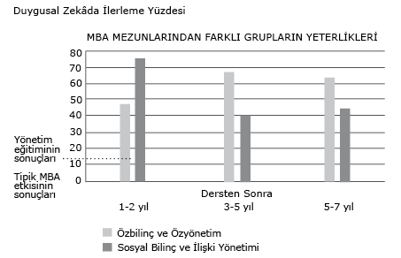

II. Kısım - LİDERLERİN YARATILMASI
6. Bölüm - AHENK YARATAN LİDER OLMAK Beş Keşif
Perakende zincirinin tüm üst yönetim ekibi telaş içindeydi; şirket kendini yeniden yaratma mücadelesini verirken yukarıdan aşağıya, ya da içeriden dışarıya koşturup duruyorlardı. Entrika, siyasi çekişme, hatta kaçamak düzeyinin her zamankinden fazla oluşu hiç şaşırtıcı değildi. Her konuşmaya ya da tartışmaya katılan insan kaynakları müdürü Bill, kargaşanın tam ortasındaydı. “Bir bilen” konumuna bürünerek, düşündüğü ve bildiğini sandığı şeyleri herkese bildiriyordu.
Üst düzey yönetim ekibinden bazı kişiler Bill’in kendine aşırı önem atfetme duygusuna ayak uyduruyor, kendi amaçlarına hizmet ettiği için de destekliyorlardı. Kimisi de ondan kaçınmakla yetiniyordu. Derken, geçiş kargaşasının tam ortasındayken, yönetim kurulu önde gelen, ama baskıcı bir icra komitesi üyesinin istifasını istedi; bu, ekipteki herkes için üzücü bir olaydı. Bill’in tepkisiyse, bu durumu kendisine kulak veren herkesi bıktıracak kadar uzun uzadıya analiz etmek oldu. Ona buna çamur atıp dedikodu yaydı. Bu dedikodulardan haberdar olan kendi şefinin esefle, “Bill tam bir kara cahil,” dediği duyulmuştu.
Bununla birlikte, şefi de, üst yönetim ekibinin bir başka üyesi de, Bill’i kenara çekip davranışını düzeltmesine yardımcı olacak dürüst bir açıklamada bulunmadı. Bu arada Bill, kendini “gerekeni yapan kişi” ve ekibin saygın bir üyesi olarak görüyordu. Karmaşık çevresinde kendine hâkim olmak bir yana, o çevreyi okumayı da bilmediğinden, Bill’in özbilinçsizliği, siyasi bilinç ve empati eksikliğiyle katmerleniyordu.
Bill gibi üst düzey bir lider, kendi gerçekliğinden nasıl bu denli habersiz olabilir? Bu, sandığınızdan çok daha yaygın bir durumdur. Aslında, bir lider yükseklere tırmandıkça, kendini doğru değerlendirme olasılığı da azalabilir. Buradaki sorun, Bill’de olduğu gibi, vahim bir geribildirim eksikliğidir. Liderler, özellikle de liderlikleri konusunda içtenlikli geribildirim almakta herkesten daha fazla zorlanırlar. Daha özgül olarak, duygusal zekânın sıradışı liderliğe açık katkısı düşünüldüğünde, liderlerin hangi duygusal zekâ yeterliklerini geliştirebileceklerini bilmeleri gerekir. Bill’in dedikodu yayması örgüt içinde gerginlik yaratıyor, aşırıya kaçan analizleriyse can sıkıyordu. Sonuç olarak, insanlar onu ciddiye almıyordu.
Buradaki paradoks kuşkusuz, liderin örgüt içindeki konumu yükseldikçe, o türden geribildirim gereksiniminin de gitgide artmasıdır.
CEO Hastalığı
Avrupa’daki bir şirketin CEO’su bize şöyle dedi: “Gerçeğe ulaşamadığımı öyle sık hissediyorum ki. Aslında kimse bana yalan söylemediği için, hiçbir zaman üzerine parmak basamıyorum. Ancak insanların, fark etmemem için benden bilgi sakladıklarını, ya da çok önemli olguları örtbas ettiklerini sezebiliyorum. Yalan söylemiyorlar, ama bilmem gereken her şeyi de anlatmıyorlar. Hep sezgilerimle tahminde bulunuyorum.”
Bu, çok açık bir CEO hastalığıdır: İnsanlar önemli (ve genellikle tatsız) bilgiyi sakladıklarında, liderin etrafında bir enformasyon boşluğu yaratılır.1 Can alıcı konularda doğru enformasyon liderlerden niye sakınılır? Kimi zaman gerçekleri bildirmesi gereken insanlar, liderin öfkesinden çekinir; özellikle de liderin ana tarzı kumanda etmek ya da hız belirlemek olduğunda. Bu tür bir lidere kötü haberler getiren kişi, ulak olduğu için simgesel anlamda idam edilebilir. Kimisi, “iyi yurttaşlık” ya da takım oyunculuğunun gereği olarak –ya da resmi görüşe karşı çıkarsa bir kâfir gibi görünme korkusuyla– lidere yalnızca olumlu bilgileri verir. Ya da sırf iyimser biri gibi görünmek istediği için, olumsuz gerçekleri sümenaltı eder.
Nedenleri ne olursa olsun, sonuçta lider çevresinde olup bitenler hakkında ancak kısmen bilgi edinebilir. Bu hastalık örgüt içinde –yalnızca CEO’lar değil, çoğu yüksek düzeyli liderler arasında da– salgın halini alabilir. Patrona yaranma içgüdüsüyle beslenir ve bilgi yukarıya doğru aktığında olumlu geribildirimde bulunup olumsuz geribildimden sakınma gibi yaygın bir eğilime yol açar.
Liderlerin özellikle kendi performanslarına ilişkin yararlı bir geribildirim almaları söz konusu olduğunda, sorun büyür. Patronun karşısına şirket hakkında kötü haberlerle çıkmak biraz yürek isteyebilir, ama patrona insanların ne hissettiğinden habersiz olduğunu, ya da “esinleyici” konuşmalarının çok başarısız kaldığını bildirmek için daha da yürekli olmak gerekir.
Kuşkusuz, birçok kişi –yalnızca liderler değil– aldığı performans geribildiriminin yetersizliğinden yakınır. Ancak durumları hakkında en az güvenilir bilgiye ulaşanlar, genellikle en üst düzey yöneticilerdir. Örneğin 28.000’den fazla yöneticiyi değerlendiren 177 ayrı incelemenin analizinde, yöneticinin konumu yükseldikçe ya da rolü karmaşıklaştıkça, performans geribildirimindeki tutarlılığın da azaldığı bulgulanmıştır.2 Kadın liderlerin ya da bir azınlık grubuna ait olanların sorunu, çok daha büyüktür.3 Kadınlar, genel olarak, liderlik ya da başka bir konumdaki performansları hakkında erkeklerden daha da az yararlı geribildirim alırlar. Aynı şey, Malezya’daki Çinli ya da Londra’daki Sih yöneticiler gibi gözle görülür azınlık gruplarının üyeleri için de geçerlidir.
İnsanlar –ister üstleri olsun, ister astları– birlikte çalıştıkları kişileri çeşitli nedenlerle dürüst bir performans geribildiriminden yoksun bırakırlar; bu nedenlerin başında da, böylesi bir geribildirimde bulunarak insanların rahatını kaçırma olasılığı gelir. Başkalarını kırmak ya da üzmek istemeyiz. Yine de, başkalarının performansıyla ilgili gerçekleri (tuhaftır, yalnızca olumsuz gerçekleri değil, olumlu olanları da) kendimize saklama eğilimi göstermekle birlikte, genelde hepimiz o tür bir değerlendirmenin özlemini duyarız. İçtenlikli değerlendirmeler, diğer her türlü enformasyondan daha derin bir önem taşır.
Herkes Ortalamadan Daha İyi Olabilir mi?
Peki, CEO hastalığında özdeğerlendirmenin rolü nedir? Hiç kuşkusuz, liderin özbilincini ve performansını doğru algılama becerisi, başkalarından alacağı geribildirim kadar önemlidir. Ancak hastalığın en tehlikeli halkası da belki buradadır: Çoğu kişi yeteneklerini kendi gözünde bir dereceye kadar büyütse de, yeteneklerini en çok abartanlar en kötü performansı gösterenlerdir.4 Bu çok insani kusur, yalnızca liderler değil, önderlik ettikleri şirketler açısından da çok büyük sonuçlar doğurabilir.
Örneğin, Kentucky eyaletinin Lexington kentindeki Health Care Partners‘ın CEO‘su Eric Harter‘ın sağlık hizmeti veren şirketlerin CEO‘ları hakkında yaptığı bir incelemenin bulgularına göre, liderlik yetilerinden biri olan özbilinç, en başarılı şirketlerin CEO‘larında çok yüksek, en başarısız şirketlerin CEO‘larındaysa çok zayıftı.5 Akademik bir eğilimi olan Harter, üst düzeylerdeki en etkili yöneticileri en etkisizlerden ayıran nitelikleri araştırmak üzere bir yüksek lisans okuluna gitti. On yıldır olumlu mali performans gösteren (ölçümler bilanço sonuçları ve temettüye dayalıydı) sağlık hizmeti şirketlerinin CEO‘larını inceleyerek, onları aynı on yıllık dilimin büyük bir bölümünde olumsuz mali performans gösteren şirketlerdeki meslektaşlarıyla karşılaştırdı.
Özbilinç düzeyleri üzerinde odaklanarak, on liderlik yeteneği hakkında CEO‘ların kendi performans değerlendirmelerini, astlarının (örneğin, özgüven ve empatiyi de içeren) aynı yetenekler konusundaki değerlendirmeleriyle karşılaştırdı. Anlamlı bir biçimde, en kötü performansı gösteren şirketlerin CEO‘ları, on liderlik yeteneğinin yedisinde kendilerine en yüksek puanı vermişlerdi. Astlarının değerlendirmeleri ise ters yönde bir eğilim gösteriyordu: Aynı yetenekler konusunda bu CEO‘lara düşük puan vermişlerdi. Öte yandan astlar, en yüksek performanslı şirketlerin başındaki CEO‘ları, bu on liderlik yeteneğinin tümünü en sık sergileyen kişiler olarak görüyorlardı.
Harter‘ın verileri, çok farklı örgütlerde alt düzeylerden üst düzeylere kadar çeşitli konumlardaki 787 kişiyle ilgili bulgularımıza uyuyordu.6 Verileri örgütsel düzeye göre analiz ettiğimizde, çarpıcı bir sonuç çıktı ortaya: Daha alt kademelerle karşılaştırıldığında, üst düzey yöneticilerin yirmi duygusal zekâ yeterliği konusunda kendilerine verdikleri puanlar başkalarının aynı yeterlikler konusunda bu liderlere verdiği puanlardan daha cömertti. Liderlerin örgüt içindeki konumu yükseldikçe, şişirme –yani, bir yeterlik konusunda kendilerini çevrelerindeki kişilerden daha başarılı bulma– oranı da artıyordu. Bu yanlış algılamanın bir sonucu da, yöneticilerin örgüt içindeki konumları yükseldikçe, kendileri hakkında düşündükleriyle başkalarının onlar hakkında düşündükleri arasındaki farklılığın büyümesiydi. En yüksek düzeydekiler, başkalarına karşı nasıl davrandıkları konusunda en isabetsiz görüşlere sahip olanlardı.
Bu durumda, liderlik yetenekleri konusunda dürüst bilgi arayışının, liderin özbilinci, dolayısıyla da gelişimi ve etkililiği açısından hayati önem taşıyabileceği açıktır. Öyleyse daha yüksek konumdaki liderler doğru geribildirimi niçin talep ve teşvik etmezler? Bunun nedeni, alabildiğine kibirli olmaları ya da yanılmalarının olanaksız olduğunu düşünmeleri değildir. Liderlerle yaptığımız konuşmalar, çoğu kez değişemeyeceklerine içtenlikle inanmalarının buna neden olduğunu gösteriyor. Liderlik tarzlarının ekibi ya da örgütü nasıl etkilediği konusunda iyi bir geribildirim alsalar da, hatta bu geribildirimin doğru olduğunu görseler de, yıllardır –çoğu durumda yaşamlarının büyük bir kısmı boyunca– sürdürdükleri davranış biçimini değiştirebileceklerine yürekten gelen bir inanç duymuyorlar. Bunun koşutu çoğu kez liderin çevresindeki insanlarda da görülüyor: Liderin gerçekten değişebileceğine inanmıyorlarsa, tatsız ve yakışık almayan olumsuz geribildirimlerde bulunup ne diye başlarını belaya soksunlar ki?
Yine de biz, bunun tam tersini işaret eden güçlü deliller gördük: Eski liderler yeni hünerler edinmeyi öğrenebilirler. Liderler kendi tarzlarını, bazı durumlarda yaşamı farklılaştıracak ve ekiplerinde dalga etkisi yaratarak tüm örgütte önemli değişimleri başlatacak şekilde değiştirebilirler ve değiştirmektedirler.
Doğaya Üstün Gelen Öğrenme
Nick Mimken, çalıştığı sigorta acentesinde art arda satış ödülleri kazanarak yıldız olmuştu. Ancak, kendisine doğrudan bağlı yirmi beş satıcının bulunduğu yeni bir kentteki acentenin başına getirildiğinde, liderlik yetenekleri ona hiçbir ödül kazandırmayacaktı. Daha en başından bunu kendisi de görmüş ve bu işin hiç hata kaldırmayacağını anlamıştı: Yeni acentesi, şirketin ABD’deki şubeleri arasında satış performansı açısından son yüzde 25’lik dilimde yer alıyordu.
Liderlere danışmanlık yapan McBer & Company, şimdiki adıyla Hay Group, işe koyulduktan birkaç ay sonra kendisiyle çalışmaya başladığında, astlarından gelen geribildirimler, Minken’ın satıcılıktaki başarısının hız belirleyici bir liderlik tarzına dönüşmüş olduğunu ortaya çıkardı. Daha iyi sonuç alabilmek için, kendisini satış konusunda o kadar başarılı kılan yüksek basınçlı itkisine bel bağlamıştı. Ancak yeni konumunda bu, satıcılarının şevkini kırıyordu. Daha da kötüsü, stres arttığında ve dönem sonları yaklaştığında, Mimken kumandacı tarza geçerek, birlikte gerçekçi hedefler belirlemek yerine, tutturmaları gereken satış hedeflerini bildiriyordu. Bu arada, acentedeki hava giderek gerginleşiyordu.
İlk adım olarak Mimken, kendi performansından çok satış elemanlarının performansı üzerinde odaklanmaya teşvik edildi. Bu, yardımcılarından her birinin kendini geliştirmesine yardımcı olmanın yollarını bulması –kısacası, eğitici ve vizyoner liderlik tarzlarına başvurması– anlamına geliyordu. Neyse ki bu tarzlar, Mimken’ın zaten sahip olduğu –onu çok etkili bir satıcı haline getiren– empati, özyönetim ve esinleyici liderlik gibi yetilere dayalıydı. Şimdi de personelini yönetmek için bunları kullanmayı öğrenmesi gerekiyordu.
Zamanla, satıcılarıyla hedefler ve performans konusunda sürekli diyaloğu da içeren teke tek eğitmenlik fırsatlarını kollamaya başladı. Bir satıcının yaptığı şeyler yüzünden sabırsızlığa kapıldığında, araya dalıp işi üstlenme dürtüsüne hâkim olmaya ve eleştirilerini olumlu destekle dengelemeye çalıştı. Böylece, acentenin hedeflerini ortak değerler ve herkesin paylaştığı bir vizyon olarak ifade etmenin yollarını buldu.
On sekiz ay sonra, ilerleme belirtileri apaçıktı. Mimken’ın astlarından gelen değerlendirmeler, onun baskın hız belirleyici ve kumandacı tarzlardan eğitici tarza geçtiğini ve vizyoner tarzı geliştirmeye başladığını gösteriyordu. Yapılan bir anket de, bu değişimlerin getirilerini ortaya koydu: Satıcılar, ödüllerin adil, çalışmanınsa şevk verici olduğunu gitgide daha fazla hissettiklerini belirtiyorlardı. Mimken‘ın rehberliği sayesinde, önceliklerini de açıkça anlamışlardı.
Üç yıl sonra, Mimken liderlik güçlerini geliştirmeye devam ederken, acentesi de birbirinin peşi sıra en büyüklere verilen iki ulusal ödülden birincisini kazanarak, ülkedeki 100 temsilcilik arasında ödüle layık bulunan sekiz acenteden biri oldu. Mimken, şirketin tarihindeki en genç ödül sahiplerinden biriydi. Yeni yönetici olarak şubeye girmesinden sonra, üretkenlik açısından son çeyrekte yer alan acentesi beş yıl içinde ilk yüzde 25‘lik dilime girdi.
Mimken’ınkine benzer öyküleri defalarca gördük (bkz. “Doğuştan Değil, Sonradan Lider Olunur” bölümü). Bu öyküler yalnızca liderlerin yaratılabileceğini değil, ayrıca duygusal zekânın öğrenilebileceğini de gösteriyor; tıpkı Mimken‘ın daha ahenkli liderlik tarzlarını öğrenip uygulayabilmiş olması gibi.
Hâlâ gündemde olan, “Bazı kişiler doğuştan belirli düzeyde bir empatiye mi sahiptir, yoksa empati göstermeyi sonradan mı öğrenirler?” sorusunun yanıtı şudur: Her ikisi de. Duygusal zekâda kalıtımsal bir öğe olduğu kuşku götürmez, ama öğrenme de önemli bir rol oynar. İnsanlar doğal yetenekleri açısından ilk başlarda birbirlerinden farklı olabilirler, ancak nereden başlarsa başlasın, herkes ilerleme kaydetmeyi öğrenebilir.
Kimi zaman, kişinin zaten sahip olduğu becerileri geliştirmesi söz konusudur. Örneğin, satıcı Mimken yıllarca müşterilerine empati gösterdiği halde, şef Mimken astlarının neyi daha iyi yapmaları gerektiğinden çok, neyi yanlış yaptıkları üzerinde durarak hız belirleyicilere özgü bir zaaf gösteriyordu. Üzerinde çalışarak, satıcılarına karşı empatisini büyük ölçüde artırdı, bu sayede onlar da gereksinimlerinin anlaşıldığını hissettiler. Mimken ayrıca, geliştirdiği liderlik tarzlarını destekleyen araçlara da hâkim oldu. Örneğin, performans planları yapmakta ustalaştı ve satıcılarını bunları gerçekleştirmeye teşvik ettikçe, onlar da başarılı olmalarına yardım edebileceğine inanmaya başladılar. Dahası, Mimken’ın işyerinde yaşadığı değişim, ev yaşamına da yansıdı. Eşi, kendisinin ve ailenin gereksinimlerine karşı daha dikkatli olduğunu belirtti.
Mimken’ın öyküsü, çok önemli bir başka noktaya da işaret ediyor: Duygusal zekâ hem öğrenilebilir, hem de uzun erimde korunabilir. Araştırmalarımız, bu öğrenimin sürmesini sağlamak için liderlerin atacağı çok özgül adımlar olduğunu göstermiştir. Bu liderlik edinimlerini, başlangıç aşamasından –bazen balayı etkisi diye adlandırılan şeyin çoktan geride bırakıldığı– yedi yıl sonrasına kadar izledik.
Balayı Etkisinin Ötesi
Mimken’ın öyküsünün gösterdiği kalıcı türden öğrenimi –ve bunun iş performansı üzerindeki etkisini– sürekli görüyoruz. Bunlar, âni düzelmenin üçle altı ay arasında neredeyse tamamen silindiği, çoğu eğitim programının herkesçe bilinen balayı etkisiyle karşılaştırıldığında etkileyici sonuçlardır. Bilinen döngü şöyle gelişir: Kişi, programdan coşkuyla ve düzelme vaadiyle ayrılır. Ancak işyerine döndüğünde, düzinelerce e-posta, mektup ve çağrıyla karşılaşır. Üstü ve bir astı, acil bir durum nedeniyle kendisini aramış olduklarından, kendisinden istenen işlerin batağına saplanıp kalır. Yeni öğrenilenlerin hepsi zihninden uçup yerini eski reflekslere bırakır. Kısa süre içinde –eğitimin sonunda vaat ettiği şekilde değil– her zamanki gibi davranmaya başlar. Balayı aniden sona ermiştir.
Bu olgu, insan kaynakları uzmanlarını onyıllardır hüsrana uğratmaktadır. İnsanların eğitimden coşkuyla çıkmalarına karşın, zamanla iyi niyetlerinin körelişini defalarca izlemişlerdir. İncelemeler, eğitimden gerçek değişimin doğabileceğini göstermiş olsa da, bu değişim çoğunlukla uzun süreli olmaz, balayı etkisi diye nitelendirilmesinin nedeni ne budur.7 Yalnızca Kuzey Amerika’da eğitime harcanan 60 milyar doların üzerindeki para düşünüldüğünde, bu gözlem aklımızı başımıza devşirmemizi sağlayacaktır.
Belki de uzun sürmeyeceğine dair bu yaygın inanç nedeniyle, eğitimin insan davranışları üzerindeki etkisi konusunda görece az sayıda inceleme yapılmıştır.8 İnsan davranışlarındaki düzelmeyi inceleyen birkaç çalışma arasından, bireyleri eğitim öncesinde ve sonrasında sınayan ya da bu etkileri eğitimden geçmemiş olanların davranışlarıyla karşılaştıranların sayısı daha da azdır.9
İstisnalar da vardır. Bir kişinin sunum ve iletişim becerilerinde ilerlemeler kaydedebileceğimiz kanıtlanmıştır. Satış yöneticileri üzerinde yapılan bir inceleme, eğitimden sonraki hafta boyunca etkili iletişim becerilerinde yüzde 37’lik bir ilerlemeyi ortaya koymuştur.10 Ancak bir haftalık değişiklikten, sürdürülebilir bir değişim olacağı sonucunu çıkaramayız.
Özyönetim ve ilişki yönetimi becerilerinin bu kitapta tartışılan duygusal zekâ yeterliklerini temsil eden daha geniş bir kümesi incelendiğinde, eğitim programlarının etkisi genelde daha azdır.11 Bu geniş duygusal zekâ becerileri grubuyla ilgili çalışmalar, eğitimden sonra üç ayla bir buçuk yıl arasındaki ölçümlerde yaklaşık yüzde 10’luk bir ilerleme görüldüğünü gösteriyor.12 O kadar çok para ve çaba harcandığı halde, sonuçların bu denli zayıf olmasının nedeni nedir?
Kalıcı liderlik becerilerinin geliştirilmesi söz konusu olduğunda, motivasyonun yanı sıra kişinin öğrenme hakkında ne hissettiği de çok önemlidir. İnsanlar öğrenmek istedikleri şeyi öğrenirler. Öğrenim bize dayatıldığında, (örneğin bir sınava hazırlanmak için çalışarak) konuyu geçici olarak kavrasak bile, kısa sürede unuturuz. Bir MBA dersinde öğrenilen bilginin altı haftalık bir ömrü olduğu bulgusunun nedeni de bu olabilir.13 Bu nedenle bir şirket, insanların “tek beden herkese uyar” anlayışıyla hazırlanmış bir eğitim prog-
DOĞUŞTAN DEĞİL, SONRADAN LİDER OLUNUR
• Amerika‘ya geleli çok olmamıştı ve 13 yaşında bir erkek çocuğu olarak, yeni okula uyum sağlamak ve beğenilmek istiyordu. Bu nedenle, lakros takımına girdi. Mükemmel değilse de, oldukça iyi bir lakros oyuncusu olduğundan, takımda bizzat oynamak yerine, yeni oyunculara oyunu öğretmeye karar verdi. Yetenek geliştirmekte başkalarına yardım etmenin nasıl bir şey olduğunu ilk kez o zaman fark etti. 24 yaşındayken de, üniversite sonrası ilk işinde, bir satış ekibinin başına getirildi. İşin inceliklerini kendi başına öğrenmek durumunda kaldı; kimse ona bir satış görüşmesinin nasıl yapılacağını göstermedi. Ama işleyişi kavrar kavramaz, yeteneklerini pekiştirmelerine yardımcı olmak için ekip üyelerini ürün sunuş görüşmelerine götürmeye başladı. Daha sonra, bir ilaç firmasına girdiğinde, öğretimde öyle başarılı oldu ki, kendisinden satış eğitiminde kullanılmak üzere bir video kaydı yapmasını istediler. Yönetici olduğunda, insanları geliştirme konusunda tam bir ustaydı.
• Üniversite yıllarında uluslararası bir işletme kulübünün üyesi olan genç kadın, pek çok üyenin amaçlarıyla kulübün amaçlarının birbiriyle çeliştiğini gördü ve herkesi ortak bir hedefte birleştirmenin bir yolunu buldu. Ardından, üniversite sonrası tek başına bir satış temsilcisi olarak çalıştığı ilk işte, başka temsilcilerle telefon ya da e-posta aracılığıyla sanal bir ekip yaratmak durumunda kaldı ve böylece, insanların işbirliğine nasıl heveslendirileceğini öğrendi. Daha sonra, bir ekip lideri olduğunda, üyelerin katkılarını kabullenmenin yollarını bulabilen yardımcısından, takım ruhu yaratmayı öğrendi. Son olarak, çok işlevli bir üst düzey liderlik ekibine girdiğinde, önemli kararlar alınmadan önce çıkar ortaklarını bulup onlarla konuşma biçimi, pürüzsüz bir görüş birliğine yol açmaktaki ustalığını açıkça belli ediyordu.
Bu iki öykü, üstün performanslı iki liderin, etkili olmalarını sağlayan duygusal zekâ becerilerini nasıl doğallıkla öğrendiklerini gösteriyor. Yukarıda anılan satış yöneticisi ve ekip lideri, Johnson & Johnson‘da Matthew Mangino ile Christine Dreyfus‘un yönettiği bir araştırma ekibince, insanların liderliğin temel öğelerini nasıl kazandıklarını keşfetmek için incelenen dokuz sıradışı yöneticiden ikisiydi.14 Mangino ve Dreyfus tekrar tekrar aynı modelle karşılaştılar: Liderlerin bir yeterliği ilk fark edişleri, çocukluğun geç dönemlerinde ya da ergenlik çağında başlıyordu; daha sonra, ilk işlerinde, ya da bir başka köklü geçiş dönemi bu beceriye sağkalım açısından hayati bir önem kazandırdığında, onu daha amaca yönelik olarak kullanıyorlardı. Yıllar geçtikçe ve beceriyi kullanmaya devam ettikçe, o konuda giderek daha başarılı oluyorlardı; bu yeterlikleri ilk kez ve düzenli olarak kullandıkları belirli anlar vardı. Kişinin bir yeterliğini ilk kez fark etmesinden ustalaşma noktasına kadar ilerlemesi –bir başka deyişle, yeterliği düzenli ve etkili bir biçimde kullanabilmesi– büyük liderliğin yaşam içinde nasıl geliştiğine tüm incelikleriyle bakma olanağını veriyor. Örneklerimizdeki kişiler, liderlik becerilerini sessizce ve genelde görünmez bir biçimde edindikleri için “doğuştan” lider gibi görünseler de, bir ekibe önderlik etmeyi ya da başkalarının güçlü yanlarını geliştirmeyi bilerek dünyaya gelmemişlerdi. Bunun yolunu öğrenmişlerdi. Araştırmalarımıza göre insanlar, yaşamlarında ve kariyerlerinde onca etkili olmalarını sağlayan yeterlikleri yavaş yavaş öğrenerek, sonradan lider olmaktadırlar. Her lider bu yeterlikleri herhangi bir noktada öğrenebilir.
Liderlikte ustalaşmak, daha iyi golf oynamak ya da gitar çalmayı öğrenmek gibi, diğerlerine benzer bir beceridir. İradesi ve hevesi olan herkes, atması gereken adımları anlar anlamaz, daha iyi önderlik edebilir.
Gerçekten de, ECI‘den gelen verileri analiz ettiğimizde, genelde bir kariyer boyunca insanların doğallıkla duygusal zekâ yeterliklerinde daha fazla güçlendiklerini; yaşlandıkça daha başarılı olduklarını bulguluyoruz.15 Bu yalnızca, yaşları ilerledikçe kendilerini daha iyi değerlendirmelerinde değil –daha da önemlisi– başkalarının onlar hakkındaki değerlendirmelerinin zamanla daha olumlu olmasında da ortaya çıkıyor.
Ancak dikkat: Bu genel ilerleme trendi, tüm liderlerin duygusal zekâ yeterliklerini gerektiği anda doğallıkla gerektiği düzeylere çıkarabilecekleri anlamına gelmez. Bu nedenle de, belli bir liderin güçlü ve zayıf yanlarının iyi teşhisi –ve bir gelişim planı– çok önemlidir.
ramından geçmesini şart koştuğunda, katılımcılar –öğrenmeyi gerçekten istemedikçe– seyirci kalmakla yetinebilirler. Aslında, köklü bir davranışsal değişim ilkesine göre, kişi değişmeye zorlanırsa, dayatma bittiğinde değişim de silinip gider.16
İşin olumlu yanıysa şudur: Birçok liderlik programı zamanla etkisini kaybetse de, liderlik eğer doğru ilkelere dayalı olarak geliştirilirse, düzelmeler sürebilir. Hız belirleyiciler, eğitici ve vizyoner liderlik yetilerini geliştirerek kendilerine çekidüzen verebilirler. Empati düzeyi artırılabilir ve kalıcı olabilir. Bunun gerektirdiği şeyse, katılımcıların isteyerek çaba, heves ve duygusal bağlılık göstermeleridir.
Dahası, bu tür bir öğrenimin beyinde nasıl gerçekleştiğini de biliyoruz.
Beynin Önemi
Duygusal zekâ, 2. ve 3. bölümlerde gördüğümüz gibi, beynin prefrontal loblardaki yönetim merkezleri ile hisleri, dürtüleri ve güdüleri yöneten limbik sistem arasındaki devreyle ilintilidir. Limbik bölgelere dayalı beceriler, araştırmalara göre, motivasyon, sürekli tekrar ve geribildirimle en iyi şekilde öğrenilir.17 Bu tür öğrenimi, analitik ve teknik beceriyi yöneten neokortekste olup bitenlerle karşılaştıralım. Neokorteks kavramları çabucak kavrayıp onları geniş bir ilişkilendirme ve anlayış ağının içine yerleştirir. Beynin bu bölümü, örneğin, kitaptan okuyarak bir bilgisayar programını kullanmayı ya da bir satış görüşmesi yapmanın temellerini anlayabilir. Neokorteks, teknik ya da analitik becerileri öğrenirken çok verimli bir biçimde çalışır.
Sorun yaratan, liderlik gibi duygusal zekâ yetilerini güçlendirmeye yönelik çoğu eğitim programının, limbik beyin yerine neokorteksi hedef almasıdır. Böylece eğitim kısıtlanır, hatta kimi zaman olumsuz bir etkisi de olabilir. Mikroskopla incelendiğinde, limbik bölgeler, yani duygusal beyindeki beyin hücreleri örgütlenmesi, neokorteks, yani düşünen beyindekinden daha ilkeldir. Neokorteks, yeni fikirleri ya da olguları çok geniş bir bilişsel ağa bağlayarak anlayışımızı genişleten tasarımıyla, son derece verimli bir öğrenme aygıtıdır. İlişkilendirmeye dayalı bu öğrenme tarzı, olağanüstü bir hızla gerçekleşir: Düşünen beyin, bir şeyi tek bir işitme ya da okumayla anlayabilir.
Limbik beyinse, çok daha yavaş öğrenir; özellikle de derinlere kök salmış alışkanlıkların yeniden öğrenilmesi söz konusu olduğunda. Aradaki bu fark, liderlik becerilerini geliştirmeye çalışırken büyük önem taşır: En temel düzeyde, bu beceriler, hayatın erken dönemlerinde edinilen alışkanlıklar gibidir. O alışkanlıklar artık yeterli değilse, ya da kişiyi engelliyorsa, öğrenme daha uzun zaman alır. Dolayısıyla da duygusal beynin liderliği öğrenmek üzere yeniden eğitilmesi, düşünen beyinde işe yarayandan farklı bir model gerektirir: Sürekli pratik ve tekrar yapılmalıdır.
Doğru model kullanılırsa, eğitim, olumsuz ve olumlu duyguları düzenleyen beyin merkezlerini –amigdala ile prefrontal loblar arasındaki bağlantıları– değiştirebilir. Örneğin, Wisconsin Üniversitesi’nden araştırmacılar, bir biyoteknoloji firmasında çalışan ve işlerinin stres yaratan temposundan yakınan Ar-Ge bilimcilerine “aklını toplama”yı öğretmişlerdi. Aklını toplamak, insanların mevcut duruma yoğun bir biçimde odaklanıp, (endişe gibi) dikkati dağıtan düşünceler içinde kaybolmak yerine onları durdurmalarına yardım eden, dolayısıyla da sakinleştirici etkisi olan bir beceridir. Sadece sekiz hafta sonra, Ar-Ge bölümündekiler streslerinin kayda değer bir biçimde azaldığını ve işlerine karşı daha coşkulu, daha yaratıcı olduklarını söylemişlerdi. Ancak en dikkat çekici olanı, beyinlerinin (sıkıcı duygular yaratan) sağ prefrontal bölgelerindeki etkinliğin sola –beyindeki neşeli, iyimser duyguların merkezine– kaymasıydı.
Bu ve benzeri bulgular, sinirsel bağlantıların ergenlik çağından başlayarak kaçınılmaz bir biçimde köreldiği ve yerine konulamayacağı inancını (buna bağlı olarak da, yetişkinlik döneminin temel kişisel becerilerimizi değiştirmek için çok geç olduğu inancını) yalanlamaktadır. Nörolojik araştırmalar bunun tam tersini göstermiştir. Yetişkinlik döneminde insan beyni, yeni sinir bağlantıları ve yolları gibi, yeni sinir dokuları da yaratabilir. Araştırmacılar, örneğin, tek yönlü sokaklar ve saati durduran trafik labirenti içinde yolunu bulma hünerleriyle ünlü olan Londralı taksi sürücüleri işlerini öğrenirken, beyinlerinin de elastikleştiğini bulgulamışlardır. Yıllar boyu Londra’da araba sürdükçe, beynin uzamsal ilişkileri (örn. yol bulmayı) ele alan bölümü, boyut ve etkinlik gücü bakımından büyümektedir.19 Hayatın belli bir noktasında, defalarca kullanılan sinirsel bağlantılar güçlenirken, kullanılmayanlar zayıflar.20
Bu durumda, öğrenme ediminin yeni sinirsel bağlantıları uyarmanın anahtarı olduğu açıktır.21 Liderliğin geliştirilmesi söz konusu olduğunda, bu sinirsel değişimleri yaratmak için duygusal zekâlı bir yaklaşım gereklidir: Doğrudan doğruya duygusal merkezleri etkileyecek bir yaklaşım. Bilimcilerin vardığı sonuç şudur: “Limbik bir bağlantı sinirsel bir doku oluşturduğunda, onu değiştirmek için de limbik bir bağlantı gereklidir.”22
Etkili liderlik yetilerini öğrenmenin ilk fırsat penceresi ergenlik çağında açılıp, yirmili yaşların başlarına doğru genişler. Bu dönemde beyin –bedenin anatomik bakımdan en son gelişen organı– duygusal alışkanlıkların özgün devrelerini oluşturmayı sürdürür. Herhangi bir disiplinde ustalaşmaya çalışan, ya da bir ekip üyesi olan, ya da topluluk önünde konuşma becerilerini pekiştirme olanağını bulan genç insanlar, hayatın sonraki aşamalarında liderlik için çok önemli olan desteği verecek sinirsel bir iskelet kurmaktadırlar. Erken yaşlardaki bu öğrenme; özdenetim ve başarma dürtüsü, işbirliği ve ikna gücü gibi yeterlikleri destekleyecektir.
Kişi, belirli bir liderlik yeterliğini öğrenmesine olanak tanıyacak deneyimleri daha önceden edinmemişse, çok geç kalmış sayılmaz; ama motivasyon gereklidir. Beynin yeni bağlantılar kurma yeteneği ömür boyu sürer. Erken yaşlarda kolay görünen dersleri yetişkinlikte öğrenmek daha fazla çaba ve enerji gerektirir, çünkü bu yeni dersler beyinde çoktan yer edinmiş olan köklü kalıplara karşı çetin bir savaşa girerler. Yapılması gereken iş ikiye katlanmıştır: İşimize yaramayan alışkanlıkları söküp atmamız, yerlerine işimize yarayanları getirmemiz gerekir. Motivasyonun liderlik gelişiminde çok önemli olmasının nedeni de budur: Bir alışkanlığı değiştirmek için, ilk başta onu öğrenirken harcadığımızdan daha fazla çaba ve zaman gerekir. Duygusal zekâ ancak içtenlikli arzu ve uyumlu çabayla geliştirilebilir. Kısa bir seminer işe yaramaz, bir el kitapçığıyla da öğrenilemez. Limbik beyin neokorteksten daha yavaş öğrendiği ve çok daha fazla pratik gerektirdiğinden, empati gibi bir yetinin güçlendirilmesi, sözgelimi risk analizi için gerekenden daha fazla çaba ister.
Sürdürülebilir Öğrenim: Kanıtlar
Az önce tanımladığımız türden limbik beyin öğrenimi daha fazla zaman ve pratik gerektirdiğinden, korunması da daha olasıdır. Case Western Reserve Üniversitesi Weatherhead Yönetim Okulu’nda sürdürülmekte olan bir dizi benzersiz çalışmadan elde edilen verilerin şimdiden gösterdiği gibi, insanlar hem duygusal zekâ yeterliklerini artırabilir, hem de kazanımlarını yıllar boyu sürdürebilirler. 1990’dan bu yana, yeterlik geliştirme konusundaki zorunlu dersin bir parçası olarak öğrencilerle yapılan çalışmalar,23 öğrencilerin duygusal zekâ yeterliklerini (bazı bilişsel yeterliklerinin yanı sıra) değerlendirip bunlar arasından güçlendirmek istediklerini seçmelerini ve hedeflenen becerileri güçlendirecek bireysel bir öğrenim planıyla yönlendirilmelerini sağlamaktadır. Derse ilk girdiklerinde öğrenciler hakkında yapılan nesnel değerlendirmelerin, mezun olduklarında ve yıllar sonra iş hayatlarında yinelenmesi, liderlik geliştirmede bu yaklaşımın uzun erimli gücünün ölçümüne benzersiz bir olanak tanımıştır.24
Sonuçlar etkileyiciydi. Liderlik geliştirme programlarından çoğunda görülen balayı etkisinin aksine, bu MBA öğrencilerinin kazanımı yıllar boyu sürmüştü. Değişim sürecinden geçtikten iki yıl sonra, özgüven gibi özbilinç yeterliklerinde ve uyum sağlama, başarma dürtüsü gibi özyönetim yeterliklerinde hâlâ yüzde 47 oranında ilerleme gösteriyorlardı. Sosyal bilinç ve ilişki yönetimi becerilerindeki ilerlemeler daha da fazlaydı: Empati ve ekip liderliği gibi yeterliklerde yüzde 75 oranında.
Bu kazanımlar, duygusal zekâ yetilerini artırma çabasının neredeyse hiç görülmediği standart MBA programlarından alınan sonuçlarla bariz biçimde çelişmektedir. Bu konuda en iyi veriler, Amerikan Kolejleri İşletme Okulları Kurulu’nun araştırma komitesinden geliyor.25 Komite, üst sıralarda yer alan iki işletme okuluyla ilgili incelemesinde, son sınıf öğrencilerinin MBA programına başladıkları döneme göre yalnızca yüzde 2’lik bir ilerleme gösterdiklerini bulguladı. Gerçekten de, önde gelen diğer dört MBA programından geçen öğrenciler daha kapsamlı testlerle değerlendirildiğinde, özbilinç ve özyönetim yetilerinde yüzde 4’lük bir artışla birlikte, sosyal bilinç ve ilişki yönetiminde yüzde 3’lük bir düşüş görülmüştü (bkz. grafik).26
Weatherhead’de yapılan araştırmaya bir kez daha bakıldığında, tipik bir biçimde üç ila beş yıl içinde mezun olan “yarı zamanlı” MBA öğrencilerinde de duygusal zekâ artışları görülmektedir. Program bitiminde, bu grupların yüzde 67’si özbilinç ve özyönetim yeterliklerinde, yüzde 40’ı da sosyal bilinç ve ilişki yönetimi yeterliklerinde ilerleme göstermişti. Ancak Bowling Green Üniversitesi’nden profesör Jane Wheeler, bu kişilerin mezun olmalarından iki yıl sonra bile (yani dersleri almalarının üzerinden beş ila yedi yıl geçtikten sonra da) artışların devam ettiğini bulguladı: Yüzde 63’ü özbilinç ve özyönetim yeterliklerinde, yüzde 45’i de sosyal bilinç ve ilişki yönetimi becerilerinde ilerleme gösteriyordu.
Bu incelemelerin tam zamanlı MBA öğrencilerinde belgelediği ilerlemeler, değerlendirilen on dört duygusal zekâ yeterliğinin hepsinde görülüyordu. Öğrenim planlarında hedef almış olmaları koşuluyla, öğrencilerin ilerleme kaydedemediği tek bir yeterlik bile yoktu.27
Bu dikkat çekici sonuçlar, ahenkli liderliğin duygusal zekâ temelinde yıllarca sürdürülen kazanımların ilk kanıtlarıdır. Bunlar, sonuçların bir ila iki yıl sonrasına kadar izlendiği eğitim programlarında görülen yüzde 10’luk ilerlemelerin, ya da tipik MBA programlarının duygusal zekâ alanında kaydettiği yüzde 2‘lik ilerlemenin ışığında bakıldığında, umut vericidir. Ancak Jane Wheeler‘ın verilerinde bulguladığı beklenmedik bir kazanım daha vardı: İnsanlar ilk dersten beş ila yedi yıl sonra, üç ila beş yıl içinde zaten ilerleme kaydettikleri yeterliklerin yanı sıra, tamamlayıcı yeterliklerde de gelişme gösteriyorlardı. Bir başka deyişle, liderleri yücelten duygusal zekâ yetilerini nasıl artıracaklarını öğrenir öğrenmez, yeni güçlü yanları kendi başlarına geliştirmeyi sürdürüyorlardı. Bu bulgu, söz konusu yeterliklerin yaşam boyu edinilebileceğine dair sağlam kanıtlar sunmaktadır.

Bu tür yaşam boyu öğrenimle ilgili diğer kanıtlar, Case Western Weatherhead Yönetim Okulu’nun Profesyonel Öğrenim Programı’ndaki kıdemli yöneticilerle yapılan bir çalışmadan geliyor. Deneyimli yöneticiler ve ileri düzeydeki profesyoneller için tasarlanmış olan bu program (katılanların yaş ortalaması 48 / MBA öğrencilerininkiyse 27), üst düzey yöneticilere, hukukçulara ve hem iş hem de liderlik becerilerini güçlendirmek isteyen doktorlara hitap ediyor. Bu kıdemli yöneticiler programdan üç yıl sonrasına dek kapsamlı bir biçimde incelendiğinde, üçte ikisinin duygusal zekâ yeterliklerinde artış olduğu bulgulanmıştır.28
Demek ki –ellerine doğru öğrenim araçları verilirse– liderlerin daha etkili olmaları sağlanabilmektedir. Bu tür derin öğrenimse, doğru araçların kullanımından da öte bir şeydir. Mutlaka dümdüz, pürüzsüz ilerleyen bir süreç değildir; daha çok, sürprizler ve hakikatin göründüğü tecelli anlarıyla dolu bir yolculuktur.
Kalk Borusu
Nolan Taylor, faresini “Gönder” düğmesi üzerinde tıklattığı anda, şirketin yakın tarihli tensikat duyurusunu –ve şefinin bu işteki rolünü– eleştiren acı e-postayı, amaçladığı gibi bir başka bölümde çalışan arkadaşına değil, bizzat şefine gönderdiğini fark etti. Şefi okumadan mesajı bir şekilde geri almanın yollarını düşünürken de, kafası bu e-postanın temsil ettiği daha önemli konuya takıldı. Sarsıcı bir uyanış ânıydı bu: Olmak istediği kişi gibi davranmadığını anlamıştı.
Nolan Taylor yıllardır öfke patlamalarını kontrol altına alıp özdenetimini güçlendirmeye yeminliydi. Böylesi bariz bir yanlış adımın ve olası sonuçlarının şoku, kendini hedefine daha farklı, daha güçlü bir biçimde adamasına yol açtı. Ürkütücü durumlarda daha iyimser olmak ve hemen güvensizliğe kapılmadan ve başkalarını eleştirmeden, olumlu olasılıklarını görmek istiyordu. O e-postayı gönderdiğinde, bir kopuklukla –ideal benliğiyle gerçeklik arasındaki bariz boşlukla– yüzleşmek durumunda kaldı. Ve o anda, kendini değişmeye adadı.
Böylesi kopukluklar, doğal dünyada bile güçlü değişimlere yol açabilir. Karmaşıklık ya da kaos teorisine göre, birçok süreci yumuşak bir geçiş değil, âni bir değişim olarak tanımlamak daha doğru olur. Örneğin, yer yüzeyinin altındaki basınç zamanla oluşsa da, deprem, âni bir yer kırılması şeklinde gerçekleşir.
Liderliğin oluşumunda da yaşamımızla ilgili âni, sarsıcı keşifler, bizi kendimizle ilgili katı gerçeklerle “hayrete düşürerek” ve yaşamımıza yeni bir açıklık kazandırarak eyleme geçirebilir. Böylesi şaşırtıcı kopukluklar ürkütücü ya da aydınlatıcı olabilir. Kimileri kendinden kaçarak tepki verir. Kimisi bu kopukluğun önemini yadsır ve omuz silker. Kimisi de kalk borusunu duyar, kararını perçinler ve kendine zarar veren alışkanlıkları yeni güçlere dönüştürür. Peki ama bu değişiklikler nasıl yapılır?
Özgüdümlü öğrenme
Liderliği geliştirme sürecinde yararlı bir dönüm noktası, özgüdümlü öğrenme, yani olduğunuz ya da olmak istediğiniz kişinin, veya her ikisinin de bir yönünü isteyerek geliştirmeniz ya da güçlendirmenizdir. Bu ilk önce, ideal benliğinizin güçlü bir imgesinin yanı sıra, gerçek benliğinizin –şu anda kim olduğunuzun– doğru bir resmini de görmenizi gerektirir. Bu tür özgüdümlü öğrenme, değişim sürecini ve o süreçten geçerken değişimi gerçekleştirmenin adımlarını anladığınızda çok daha etkili ve sürekli olur.
Bu öğrenme modeli, bir örgüt danışmanı ve akademik bir araştırmacı olarak liderlik geliştirme alanında otuz yıldır çalışan Richard Boyatzis tarafından geliştirilmiştir.29 Aşağıdaki şekil, özgüdümlü öğrenme sürecini özetlemektedir.30
Beş Keşif
Özgüdümlü öğrenme, her biri bir kopukluğu temsil eden beş keşifle ilgilidir. Hedef kuşkusuz, her keşfi, bu kitapta gözden geçirilen on sekiz duygusal zekâlı liderlik yeterliğine (bkz. 3. bölümdeki tablo) sahip bir lider olmak için gerekli değişiklikleri yapmanın bir aracı olarak kullanmaktır.
Bu tür öğrenme tekrara dayalıdır. Adımlar pürüzsüz, düzenli bir biçimde açımlanmaz; daha çok belli bir sırayı takip eder ve her adımın gerektirdiği zaman ve çaba farklıdır. Yeni alışkanlıkları uyguladıkça, bunlar yeni gerçek benliğinizin bir parçası olur. Çoğu kez alışkanlıklarınız, duygusal zekânız ve liderlik tarzlarınızdaki değişimlerle birlikte, arzularınız, düşleriniz ve ideal benliğiniz de değişir. Döngü böylece –yaşam boyu süren bir gelişme ve uyarlanma süreci şeklinde– devam eder.
Kendinizle ilgili bir ideal vizyonu keşfe çıktığınızda, liderlik yetilerinizi geliştirme şevkini duyarsınız. Yani, olmak istediğiniz kişiyi görürsünüz. Bu vizyon, ister yaşamınıza rehberlik eden değer ve yükümlülüklerle bağlantı kurmanızdan kaynaklanan bir düşle, ister sadece düşünmeyle doğsun, imge içinizde coşku ve umut uyandıracak kadar güçlüdür. Çoğu kez hüsran duygusu yaratan zorlu değişim sürecine harcamanız gereken çabanın enerji kaynağı olur.
İkinci keşif, şu anda kim olduğunuzu –nasıl davrandığınızı, başkalarının sizi nasıl gördüğünü ve derin inançlarınızın neleri içerdiğini– görmek için aynaya bakmaya benzer. Bu gözlemlerin bir kısmı ideal benliğinizle tutarlı olacaktır ve güçlü yanlarınız olarak düşünülebilir; bir kısmı da olduğunuz kişiyle olmak istediğiniz kişi arasındaki farklılığı temsil edecektir. Güçlü ve eksik yanlarınızın farkına varmanız, sizi liderlik tarzınızı değiştirmeye hazırlar. Daha önce açıkladığımız CEO hastalığının panzehiridir bu.
Ancak bu değişimin başarılı olması için, yetilerinizi iyileştirmeye yönelik bir gündem oluşturmanız gerekir; üçüncü keşif de budur. Her gün denenecek yeni şeyler konusunda ayrıntılı bir şekilde yol gösterecek, güçlü yanlarınızı geliştirecek ve sizi idealinize yaklaştıracak bir eylem planı yapmanız gerekir. Plan tatmin edici olmalı, öğrenim tercihlerinize olduğu kadar hayatınızın ve işinizin gerçekliklerine de uymalıdır.
Dördüncü keşif, yeni liderlik becerilerini uygularken ortaya çıkar.
Beşincisi, sürecin herhangi bir noktasında gerçekleşebilir; ideal benliğinizi ortaya çıkarmak ya da gerçek benliğinizi bulmak, güçlü ve eksik yanlarınızı anlamak, geleceğe yönelik bir gündem oluşturmak, deney ve pratik yapmak için başkalarına gereksinim duyduğunuzu keşfedersiniz. Liderlik gelişimi ancak, ilişkilerimizin karmaşası ve olasılıkları içinde gerçekleşebilir. Başkaları eksikliklerimizi görmemize yardımcı olur, kaydettiğimiz ilerlemeyi doğrular, algılarımızı sınar ve bize ne durumda olduğumuzu bildirirler. Deney ve uygulama için bir bağlam sunarlar. Her ne kadar modele verilen ad özgüdümlü öğrenme süreci olsa da, bu iş tek başına yapılamaz. Başkaları işin içinde olmadıkça, kalıcı değişim gerçekleşemez.
Süreci özetlemek gerekirse, başarılı bir değişim yaşayan insanlar şu aşamalardan geçer:
• İlk keşif: İdeal benliğim – Kim olmak istiyorum?
• İkinci keşif: Gerçek benliğim – Ben kimim? Güçlü yanlarım ve eksikliklerim nedir?
• Üçüncü keşif: Öğrenme gündemim – Eksiklikleri azaltarak güçlü yanlarımı nasıl geliştirebilirim?
• Dördüncü keşif: Yeni davranışları, düşünceleri ve duyguları deneyip ustalaşıncaya kadar pratik yapmak.
• Beşinci keşif: Değişimi mümkün kılan, destek ve güven verici ilişkiler geliştirmek.
Bu adım adım ilerlemenin, yalnızca farkındalık değil, ivedilik duygusu da yaratan bir kopukluk –keşif ânı– şeklinde gerçekleşmesi ideal olanıdır. Bundan sonraki bölümlerde bu keşifleri ve liderlikte ustalaşmayı sağlayan yan süreçleri inceleyeceğiz.
7. Bölüm - DEĞİŞME ŞEVKİ
Abdinasır Ali hayalini keşfetmek üzereydi. Son sekiz yıldır ABD’de çok uluslu bir entegre enerji şirketinde hidrojeolog olarak çalışan Ali, yüzeyden bakıldığında ılımlı bir eleman ve ailesinin geçimini sağlayan biri gibi görünüyordu. Ancak emekli oluncaya dek ertelemeye niyetli olsa da, Ali’nin bir planı vardı.
Kuzey Kenya’nın Mandera yöresinde yirmi beş kardeşten biri olarak yetiştirilen Ali, çocuklarına daha iyi bir eğitim ve tıbbi bakım sağlayabilmek için ABD’ye gelmişti. Ancak çocukları büyüdüğünde ve kendisi emekli olduğunda, karısıyla birlikte Kenya’ya dönerek insanları su yönetimi konusunda eğitmeyi ve köyünde su kuyuları açılmasına yardımcı olmayı umuyordu; ülkesinin ciddi anlamda ihtiyaç duyduğu bir şeydi bu.
Bu umut, Ali’nin Etyopya ile Somali sınırlarlarına yakın kurak bir bölgede bulunan köyünde uzun kuraklık dönemlerine tanık olduğu çocukluğunda gelişmişti. Özellikle ciddi bir kuraklık döneminde, yüzlerce sığır, keçi ve devenin telef olduğunu anımsıyordu; et ve sütle beslenmeye alışkın olan ailesi, yaşamını hububatla sürdürmek zorunda kalmıştı. Susuzluk son yıllarda, Mandera’nın sulama projelerini ve Kenya’nın hidroelektrik barajlarında elektrik üretimini de ciddi biçimde etkilemişti.
Şu anda 40 yaşında olan Ali’nin Kenya’daki köyüne yardımcı olma hayalini gerçekleştirmesine en azından yirmi yıl daha vardı. İşine ve büyük bir çokuluslu şirkette çalışmanın yararlarına değer vermekle birlikte, kendini huzursuz hissediyordu.
Bu durumu değiştirmekle ilgili bir sohbette, “Beklemeye ne gerek var Ali?” diye sordu yönetici eğitmeni.
Ali çok uluslu bir şirkette çalışmanın yararlarından vazgeçmeye hazır olmadığını söylediğinde ise, “Kenya’da ya da Doğu Afrika’da su yönetimi konusunda çalışan çokuluslu şirketler var mı?” diye sordu. Ali bir tane olduğunu söylediğinde, biraz daha baskı yaptı: Çalıştığı şirketten –ya da bir başkasından– Doğu Afrika’da su kaynağı yönetimini geliştirecek bir şube açmasını istemeyi düşünmüş müydü? Ali, bu çok pahalı bir önerme olacağı için, sormaya cesaret edemeyeceğini söyledi.
“Bunu şirketin halka ve bölgeye borcunu ödemesinin bir yolu olarak sunduğunu varsayalım,” dedi eğitmeni.
Bu öneri üzerine, Ali bir süre sessiz kaldı. Yavaş yavaş bir takdir dalgası kapladı yüzünü, sanki karanlık bir odada şimşek çakmıştı. Başını salladı, koltuğunda geri yaslandı ve gülümsedi. Sonra da akıcı bir biçimde ve ince ayrıntılarıyla, su kaynağı yönetimiyle ilgili bir projenin çalıştığı şirkete sağlayacağı stratejik avantajları dile getirdi. Hayalini gerçekleştirmek için, çalıştığı şirketin mevcut Küresel Sosyal İnisiyatif projesinden yararlanabileceğini anlamıştı. Konuşması, büyülenmiş bir izleyici kitlesi karşısında konferans verircesine tutkuluydu. Ali hayaliyle bağlantı kurmuş ve o anda bu, düşünebileceğinden çok daha büyük bir vizyona dönüşmüştü.
Ali’nin ilk önemli keşfiydi bu: Değişimin başladığı andı. Tutkusuyla temasa geçmiş ve hayalini gerçekleştirmek için aniden çok güçlü bir şevk duymuştu. Ali eskiden vizyonuna giden tek bir yol –emeklilik için yeterince para biriktirinceye dek çok sıkı çalışmak– görebiliyorken, şimdi birçok yol ve birçok olanak görüyordu.
Tartışmanın devamında Ali, duygusal zekâ yetilerinin –özellikle de sosyal bilinç ve ilişki yönetimindeki güçlü yanlarının– vizyonunun gerçekleşmesine yardımcı olabileceğini anladı. Başkalarıyla her zaman iyi çalışmış ve işbirliğinden zevk duymuştu. Eski bir mühendis olarak, özyönetim yeterliklerinden birçoğunu geliştirmişti, yine de özgüven ve uyum konusunda biraz zorlanıyordu.
Ali, hayalini gerçekleştirebilmek için bir değişim katalizörü, şirket yöneticilerini su kaynağı yönetimi çalışmasının avantajları konusunda ikna edebilecek bir vizyoner gibi davranması gerektiğini biliyordu. Bu, özgüvenini geliştirmesi anlamına geliyordu. Yönetici arkadaşlarına yeni bir stratejiyi tanıtmak ve içlerindeki yenilikçi ruhu uyandırmak için de, daha esnek olması gerekiyordu. Ali’nin vizyonu belirginleştikçe, güven düzeyi daha önce izin vermediği bir biçimde büyüdü: Yalnızca köyüne yardım etmek yerine, Kenya’yı ve bütün o Doğu Afrika bölgesini etkileyecek bir şey yapabilirdi.
Hayatındaki en önemli işi zihninde yeniden canlandırması, Ali’nin yalnızca birkaç saniyesini almıştı. Gelecekle ilgili heyecan ve umudu elle tutulur nitelikteydi; ideal benliğine, olmak istediği şeye yeni bir anlam katmıştı. Bir hafta sonra Ali, yeni fikrinin çalıştığı şirkette insanları heyecanlandırdığını belirtti; hem de mümkün olacağını hiç düşünmediği kadar çabuk bir biçimde. Bu yeni rol, yeni duygusal zekâ yeterlikleri kazanmasını kesinlikle gerektirse de, ideal benliğini gözünde canlandırmanın –her şeyden önemli olan– ilk adımını atmıştı.
İlk Keşif:
İdeal Benlik – Değişimin Başladığı Yer
Kişinin hayalleriyle bağlantı kurması, içindeki tutkuyu, enerjiyi ve yaşam tutkusunu serbest bırakır. Liderlerin içindeki bu tutku, önderlik ettikleri insanlarda coşku uyandırabilir. İşin anahtarı, ideal benliğinizi –yaşamınız ve işinizle ilgili isteklerinizi de içeren, olmak istediğiniz kişiyi– açığa çıkarmaktır. Önceki bölümde değinilen özgüdümlü öğrenme sürecinin “ilk keşfi” budur. O ideal imgeyi geliştirmek, kişinin kendi iç dünyasının derinliklerine inmesini gerektirir. Ali gibi, yaşamınızın barındırdığı olasılıklar içinizde aniden tutku uyandırdığında, ona ulaştığınızı anlarsınız.
Duygusal zekâ alanında gerçek gelişimi başlatmak –ya da sürdürmek– için, ilk önce ideal benliğinizin gücünü devreye sokmanız gerekir. Basit bir nedenle: Alışkanlıkları değiştirmek zor iştir. Geriye bakıp Yeni Yıl dolayısıyla verdiğiniz kararlar bağlamında başarı ya da başarısızlıklarınızı düşünürseniz, bunun yeterince kanıtını bulabilirsiniz. Düşünüş ve davranış alışkanlıklarını değiştirmeye çalışırken, o alışkanlıkları yıllarca sürdürerek oluşturulan ve yoğun bir şekilde kullanıldığı için çok güçlenen sinir devresindeki onlarca yıllık öğrenim tersine çevrilmelidir. İşte bu nedenle, kalıcı değişiklik –özellikle de gergin dönemlerde ya da artan sorumlulukların ortasında– kişinin kendi geleceğiyle ilgili vizyonuna güçlü bir bağlılık duymasını gerektirir.
Aslında, değişim hayalinin kendisi bile, algılanan engeller yüzünden insanın içini endişeyle doldurabilir. O hayal şimdiden gerçekleşmediği için insan kimi zaman hüsrana kapılarak, ideal geleceğiyle ilgili ilk heyecanı duyar duymaz yitirir. İşte o anda, beynin duygulardaki rolünü anımsamak yardımcı olabilir. İkinci bölümde açıklandığı gibi, sol prefrontal korteksin harekete geçmesi, idealimize eriştiğimiz gün kendimizi ne denli iyi hissedeceğimizi kafamızda canlandırmamızı sağlayarak, şevklendirici bir umut verir. Engellere karşın bizi mahmuzlayan budur.
BUNDAN ELLİ YIL SONRAKİ SİZ
Aradan elli yıl geçseydi ve idealinizdeki yaşamı sürdürüyor olsaydınız, oturup bu kitabı okuyacağınız yer neresi olurdu, bir düşünün. Çevrenizde ne tür insanlar olurdu? Nasıl bir ortamda yaşardınız? Sıradan bir gün ya da hafta boyu ne yapardınız? Bu ideal yaşamı yaratmanın olabilirliği konusunda endişelenmeyin. Görüntünün gelişmesine izin verin ve kendinizi resmin içine yerleştirin.
Bundan elli yıl sonraki kendi görüntünüzle ilgili bir „serbest yazı“ yazmayı, ya da vizyonunuzu teybe kaydetmeyi, ya da güvendiğiniz bir arkadaşla konuşmayı deneyin. Bu egzersizi yapan birçok kişi, bir enerji boşalımı yaşadığını, kendisini birkaç saniye öncesinden daha iyimser hissettiğini söylüyor. İdeal geleceğin bu şekilde gözler önünde canlandırılması, yaşamımızdaki gerçek değişim olasılıklarıyla bağlantı kurmanın etkili bir yolu olabilir.
Dikkatimizi tam tersine, ideal yaşamımızın güçlü imgesi yerine önümüzdeki engellere verirsek, sağ prefrontal bölgeyi harekete geçirir ve şevkimizi kırıp başarımızı engelleyebilecek kötümser bir görüşe saplanırız.
İdeale karşı “Gerekli Sanılan”
Charles Handy, The Hungry Spirit: Beyond Capitalism, A Quest for Purpose in the Modern World (Aç Ruh: Kapitalizmin Ötesinde, Modern Dünyada Bir Amaç Arayışı) adlı kitabında bu ideal benlikle bağlantı kurmanın zorluğunu anlatıyor:
Hayatımın ilk dönemlerini başka birisi olmaya çalışarak geçirdim. Okulda mükemmel bir sporcu, üniversitede sosyalliğiyle hayranlık duyulan biri, ardından bir işadamı, sonra da büyük bir kurumun başkanı olmak istedim. Bunların hiçbirinde başarılı olamayacağımı keşfetmem uzun sürmedi ama, denememi ve sürekli olarak kendimi hayal kırıklığına uğratmamı da engellemedi.
Sorun, başka biri olmaya çalışırken, olabileceğim kişi üzerinde yoğunlaşmayı göz ardı etmemdi. Bu fikir o sırada üzerinde düşünemeyeceğim kadar ürkütücüydü. Zamana ayak uydurarak başarıyı parayla ve mevkiyle ölçmek, başkalarının önüme koyduğu basamakları tırmanmak, kendi inançlarımı ve kişiliğimi dışa vurmak yerine, eşya ve ilişki toplamak beni daha mutlu ediyordu.1
Bu aydınlatıcı itiraf, bir sanayi yöneticisi olarak hayli başarılı bir kişi, Londra İşletme Okulu’nun bir lideri, Kraliyet Sanat Cemiyeti’nin yönetim kurulu başkanı, dünya çapında etkili olan bir yazar ve profesöre ait. Ancak meşgul bir yaşamın akışı içinde pek çok kişi, Charles Handy gibi güç ya da şöhret düşüncesiyle baştan çıkmakta, ya da başkalarının beklentilerine boyun eğmektedir.
Bir ebeveyn, eş, patron ya da öğretmen bize ne olmamız gerektiğini söylerken, ideal benliğimizin kendi kafasındaki görüntüsünü sunar; bu, gerekli sanılan benliğimize –olmamız gerektiğini düşündüğümüz kişiye– katkıda bulunan bir imgedir. Gerekli sanılan bu benliği kabul ettiğimizde –Max Weber’in “demir kafes”imiz diye nitelendirdiği– içine kıstırıldığımız bir kutuya dönüşür ve görünmez duvarlarını zorlayan bir pandomimci gibi içinde dolanıp dururuz. Örgütlerde, bireylerin kendi düşleri ve başarı tanımları olabileceğini kabullenmek yerine, insanların kariyerlerinde bir basamak “yukarı” çıkarak ilerlemek istedikleri varsayıldığında da aynı etki oluşur. Bu tür varsayımlar kolayca, gerekli sanılan benlik’in öğeleri haline gelebilir.
İnsanlar zamanla ideal benliklerine karşı uyuşturulmuş hale gelebilirler; vizyonları bulanıklaşır ve düşlerini yitirirler. Ev taksitlerinin sorumluluğu, çocukların üniversite masrafları ve belli bir yaşam biçimini sürdürme arzusu, hayallerini gerçekleştirmeye yardımcı olacağına inansalar da inanmasalar da, insanları belli bir yolda ilerletebilir. Bunun –oldukça geleneksel kültürlerde yetişmiş profesyonellerde görülen– klasik örneği, sırf annesiyle babası gerekli bulduğu için belli bir kariyeri sürdüren kişidir. Tanıdığımız bir Hintli, böyle bir ailede büyümüştü; müziğe karşı büyük bir tutkusu vardı, ama ailesinin dileğine uysalca boyun eğerek, babası gibi bir dişçi olmuştu. En sonunda, Mumbai’deki muayenehanesini bırakıp New York’a göçtü ve hayatını –mutlu bir biçimde– sitar çalarak sürdürdü.
Gerekli sanılan benlikle ideal olanı birbirine karıştırıp gerçekçi davranmamak çok kolay olabilir. İşte bu nedenle, liderlik geliştirme süreçlerinde, ideal benliği açığa çıkaracak adımın atılması çok önemlidir. Ancak bu tür programların pek çoğu, bireyin yalnızca iş performansını azamiye çıkarmak istediği varsayımına dayalıdır. Bu can alıcı keşfi atlayıp, bireylerin öğrenme hedefleriyle geleceğe yönelik düşleri ve arzuları arasında bağlantı kurmayı ihmal ederler. Kişinin ideal benliğiyle, eğitimin dayattığı ideal arasındaki fark belirgin bir hal aldığında, bunun sonucu ya kayıtsızlık ya da isyandır.2
Vizyon Yoksa, Tutku da Olmaz
Kuzey Avrupa’daki bir telekom şirketinde kıdemli bir yönetici olan Sofia, liderlik yetilerini geliştirmesi gerektiğini biliyordu. Seminerlere girmiş, kitaplar okumuş ve danışmanlarla çalışmıştı. Gelişim planları yazmış ve hem kısa hem de uzun vadeli hedefler belirlemişti. Ne yapması gerektiğini biliyordu, ama anlaşıldığı kadarıyla bu planların hiçbiri gelişimine rehberlik edemiyor ve birkaç hafta sonra kaçınılmaz olarak çalışma masasındaki çekmecenin dibini boyluyordu. “Yanlış anlamayın,” dedi bize. “Kariyerimde başarılı olmak istiyorum. Ama o kariyer planlarının benim gerçekten ilgilendiğim şeyle pek ilgisi yok. Şu ya da bu yeterliği, sırf iş açısından gerekli olduğu için geliştirmek, bana şevk vermeye yetmiyor.”
Sofia‘nın deneyimlerini, liderlik geliştirme programlarından geçen pek çok kişi de yaşıyor. Sorun, o programlardan çoğunun yanlış varsayımlarla başlamasıdır. Gerçek liderlik gelişimi, “kariyer planlaması”ndan çok daha geniş bir alandan–kişinin yaşamı hakkındaki bütüncül vizyonunu, tüm zenginliğiyle ele alarak– başlar. Liderlerin, iş performanslarını artırmak için kendilerini duygusal bakımdan geliştirmeleri gerekir. Bu ise, çabalarını kendileri için gerçekten önemli olan şeye adamalarını gerektirir.
Dolayısıyla Sofia’dan, gelecekteki yaşamını düşünmesini, kendini serbest bırakıp olağan bir gününü nasıl geçireceğini hayal etmesini istedik: Ne yapıyor olacak, nerede, kimlerle yaşayacak ve kendini nasıl hissedecekti. Sonra da, bundan sekiz ila on yıl sonrasında –hayatının farklı olabileceği kadar uzak, hayal etmeye başlayabileceği kadar da yakın– bir tarih saptamasını istedik. Sofia 2007 Ağustos’unu seçti; ilk çocuğu o yıl üniversiteye gitmek üzere evden ayrılacağı için önemli bir tarihti bu. Sonra da 2007 Ağustos’undaki hayatıyla ilgili vizyonunu, birinci şahıs kipiyle, bugünmüş gibi yazdı. Kendisinden, yaşamındaki tüm anları, değerlerini ve hayatının o döneminde ne yapmak ve ne olmak istediğini bilinçli bir biçimde gözünde canlandırmasını istedik. Vizyonu çekiciydi:
On meslektaşın çalıştığı küçük bir işletme olan kendi şirketimi yönetiyor olduğum canlanıyor gözümde. Kızımla sağlıklı, açık bir ilişkim var, dostlarım ve çalışma arkadaşlarımla ilişkilerim de benzer biçimde güvene dayalı. Kendimi bir lider ve ebeveyn olarak gevşemiş ve mutlu, çevremdeki herkese karşı da sevecen ve yetki veren biri olarak görüyorum.
Hayatının vizyonu üzerinde böylesine bütüncül bir biçimde düşünen Sofia, yaşamının farklı parçalarının nasıl kesiştiğini ve bu hayali gerçekleştirecek bir plan yapmanın yalnızca motivasyon değil, esin kaynağı da olabileceğini anlamaya başladı. Bu sürecin sonunda, Sofia şöyle söyledi: “Yıllarca, stres altındayken insanlarla baş etme biçimim üzerinde çalışma gereğini duydum. İş yerinde hız belirleyici bir lider olmaya çok yatkındım. Oysa şimdi, resmin bütününe baktığımda, kızımla aramdaki kimi çekişmelerin de aynı sorunlar dizisinden kaynaklandığını görüyorum.” Sonra da daha verimli tarzlardan yararlanarak stresle baş etmek üzere, o içgörüleri gelişim hedeflerine nasıl dönüştüreceğini düşünmeye başlayabildi.
Kabaca 40 yaşının altındakiler olarak tanımlanan pek çok genç liderin, bir önceki liderler kuşağına kıyasla daha bütüncül –yalnızca işlerini değil, yaşamlarının birçok yönünü de ele alan– bir öğrenme hedefleri olduğunu bulguladık. Bu değişim kısmen, X ve Y Kuşakları ile yapılan anketlerin gösterdiği gibi, 20’li ve 30’lu yaşlarındaki insanların, yaşam ve işleri hakkında önceki kuşaklara göre daha dengeli bir görüşe sahip oldukları gerçeğini yansıtıyor. Anneleriyle babalarından gördükleri gibi bazı özverilerde bulunmaya istekli olmadıklarından, dengeli bir yaşam kurmayı amaçlıyorlar. İlişkileri, tinsel yaşamları, topluluk sorumlulukları ve fiziksel sağlıkları konusunda gözlerini açık tutmak için bir kalp krizi, boşanma ya da iş kaybı yaşamayı beklemiyorlar. Daha yaşlı meslektaşlarından birçoğu da aynı sonuçlara varıyor, ama bu onlar için orta yaş ve kariyer bunalımının bir parçası oluyor.
Felsefe: İnsanların Değer Belirleme Şekli
Değerlerin ideal benliği açığa çıkarmakta önemli bir rol oynadığı açıktır. Değerler; evlilik, çocuk doğumu ya da işten atılma gibi olaylara bağlı olarak yaşam süresince değiştiğinden, daha dayanıklı olan, kişinin temel felsefesidir.3 Bir insanın felsefesi, değerlerini –ve hangi liderlik tarzına doğru çekildiğini– belirleme şeklidir. Hedeflere ulaşmaya her şeyden fazla değer veren bir lider, doğallıkla hız belirleyici olacak, daha demokratik bir tarzı zaman kaybı olarak görecektir. Kendi çalışma felsefenizi anlamanız, ideal benliğinizin değerlerinizi nasıl yansıttığını görmenize yardımcı olabilir.
Örneğin bir danışman, “aile”yi baskın bir değer olarak sıralıyor, ama yine de haftanın beş gününü eşinden ve çocuklarından uzaklarda, iş gezileriyle geçiriyor. Değerini, ailesinin gereksinimlerini karşılayacak parayı sağlayarak hayata geçirdiğini söylüyor. Buna karşılık,
BANA REHBERLİK EDEN İLKELER
Aile, ilişkiler, iş, tinsellik, fiziksel sağlık gibi, yaşamınızda önemli olan farklı alanları düşünün. O alanların her birinde temel değerleriniz nelerdir? İşinizde ve yaşamınızda size yol gösteren beş ya da altı ilkeyi sıralayın ve bunlar gerçekten uyduğunuz değerler mi, yoksa sadece lafta mı kalıyorlar, bir düşünün. Şimdi de hayatınızın geri kalan kısmında yapmak istediğiniz şeyleri bir ya da iki sayfada açıklayın. Ya da isterseniz bir kâğıdı 1‘den 27‘ye kadar numaralandırıp, ölmeden önce yapmak ya da yaşamak istediğiniz şeyleri sıralayın. Öncelikler ya da uygulanabilirlik konusunda endişelenmeyin; aklınıza gelen her şeyi yazın.
Bu alıştırma göründüğü kadar kolay değildir, çünkü insan doğası gereği yarın, gelecek hafta, gelecek ay yapılması gerekenler bağlamında düşünür. Oysa bu dar ufuk, önemli şeyler üzerinde değil, yalnızca acil olanlar üzerinde odaklanır. Kişi, ölmeden önce yapılması gereken şeyler gibi, daha geniş bir ufuk bağlamında düşündüğünde, kendini yeni bir olasılıklar silsilesine açar. Bu alıştırmayı yapan liderlerle çalışırken, şaşırtıcı bir eğilim gördük: Çoğu kişi bir kariyer hedefleri listesi çıkarıyor, ama listelerinin yüzde 80‘inin, ya da daha fazlasının işle hiç ilgisi olmuyor. Alıştırmayı bitirip yazdıklarını incelemeye başladıklarında, gerçek düşlerini ve arzularını berraklaştırmalarına yardımcı olan modelleri görüyorlar.
“aile”yi yine baskın değer olarak sıralayan bir fabrika yöneticisi, her akşam eşi ve çocuklarıyla birlikte yemek yiyebilmek için terfi önerilerini geri çevirmiş.
Bu iki erkeğin gerçek değerlerinin ayırdında olma düzeyleri, eylemlerinin o değerlere uyma derecesi, ya da değeri yorumlama biçimleri farklı olduğu için, insanlara, örgütlere ve etkinliklere verdikleri değer de aynı değil. Böylesi farklılıklar, çalışma felsefelerindeki ayrılığı yansıtıyor olabilir; bunlar arasından pragmatik, entelektüel ve hümanist felsefeler, en yaygın olanlarıdır.4 Hiçbir felsefe diğerinden “daha iyi” olmasa da, her biri kişinin eylemlerini, düşüncelerini ve duygularını farklı biçimde yönlendirir.
Pragmatik felsefenin ana izleği; bir fikrin, çabanın, kişinin ya da örgütün değerini yararlılığın belirlediği inancıdır.5 Bu felsefeyi benimseyen insanlar, hayatlarındaki olaylardan büyük ölçüde sorumlu olduklarına inanır ve bir şeyi çoğunlukla değerini ortaya koyacak şekilde ölçerler. Bu durumda pragmatiklerin, duygusal zekâ yeterlikleri arasından özyönetimde güçlü olmalarına şaşmamalı. Ne yazık ki bireyci yönelimleri yüzünden çoğu kez –ama her zaman değil– hız belirleyici tarz, onlara demokratik, eğitici ya da ilişkisel bir tarzdan daha çekici görünür.
Oracle Şirketi‘nin hız belirleyici CEO’su Larry Ellison’u ele alalım. Pazar payını genişletme çabası içinde, elemanlarını çoğu zaman rakipleri “mahvetmeye” ya da piyasadan “silmeye” zorluyor. Ayrıca sürekli olarak şirketin rakiplere karşı kaydettiği ilerlemeyi kıstas alıyor; konuşma ve söyleşilerinde böylesi karşılaştırmalara bol bol değinmesi, pragmatik felsefesini gözler önüne seriyor.4
Entelektüel felsefenin ana izleği; insanları, olayları ve dünyayı, nasıl işlediklerinin imgesini oluşturarak anlama, dolayısıyla da geleceğin tahminine duygusal bir güvenlik katma arzusudur.7 Bu felsefeyi benimseyenler, karara varırken mantığa dayanır ve bir şeyin değerini, aklı öne çıkaran bir yasa ya da kurallar dizisine göre belirlerler. Bu tür insanlar, kimi zaman bilişsel yeterliklere, sosyal yeterlikleri dışarıda bırakacak kadar ağırlıklı bir biçimde bel bağlarlar. Entelektüel felsefeye sahip birinin, örneğin, “Zarif bir çözümünüz varsa, buna başkaları da inanır. Yararları konusunda onları ikna etmenize gerek yoktur,” dediğini duyabilirsiniz. Vizyon iyi düşünülmüş bir geleceği tanımlıyorsa, vizyoner liderlik tarzını kullanabilirler.
Cisco Systems’in CEO’su John Chambers, teknoloji sayesinde yaşantının daha iyi olacağı bir gelecek tanımlarken, entelektüel bir görüntü yansıtıyor. Örneğin, insanlar kışın ısıtılmış evlerinden çıkıp arabalarına doğru yürürken, entegre elektronik sistemlerin giysilerin ısısını nasıl ayarlayacağından söz ediyor. Şirketinin bu gelecek modelini yaratarak, Kutsal Kitap’ı elinden düşürmeyen bir vaiz gibi sık sık, herkesin daha iyi bir topluma katkıda bulunmasını sağlayabileceğine inandığını söylüyor.8
Hümanist felsefenin ana izleği, yakın ve kişisel ilişkilerin hayata anlam kattığıdır.9 Bu felsefeyi benimseyenler, insani değerlere bağlıdırlar; onlar için aile ve yakın arkadaşlar, diğer ilişkilerden çok daha önemlidir. Bir etkinliğin değerini, yakın ilişkilerini nasıl etkilediğine bakarak saptarlar. Benzer biçimde, sadakate verdikleri değer de işteki ustalık ya da beceriden daha üstündür. Pragmatik birinin felsefesi, “azı çoğa feda etme”sine yol açabilirken, hümanist lider herkesin hayatına önem vererek, sosyal bilinç ve ilişki yönetimi yeterliklerini doğal bir biçimde geliştirir. Bu nedenle hümanist liderler, başkalarıyla etkileşimi vurgulayan demokratik, ilişkisel ya da eğitici tarzlara eğilimlidirler.
Örneğin, Narayana Murthy, merkezi Hindistan’ın Bangalor kentindeki Ifosys Technologies Ltd. şirketinin insanları esinlendiren CEO’sudur. Vizyonunun bir kısmı, demokratik liderlik tarzıyla insanları tam anlamıyla işlerine bağlı tutmaya dayalıdır. Sonuç olarak Infosys‘i, özel yazılım geliştirme ve bakım alanında, çalışılması en zevkli şirketlerden biri haline getirmiştir. Gerçekten de, Murthy kendini “zihnen kapitalist, kalben sosyalist” olarak tanımlamaktadır.10
Değişen İdeal
Kariyerleri geliştikçe, insanların düşleri ve arzuları da değişerek, hayatta ve işte önemli buldukları şeyleri yeniden biçimlendirir; aynı şekilde, ideal benlik de yaş ilerledikçe farklı kalıplara girer. Bu değişimler yalnızca insanların hangi yeteneklerini ya da yeterliklerini kullanmaya istekli olduklarını değil, ayrıca bunları kullanmaya en hevesli oldukları ve ahenk yaratabilecekleri alanları da belirler. İnsanlar kimi zaman aynı işi yapmaya devam ettikleri, düşlerinde ve önem verdikleri şeylerdeki değişimleri görmezlikten geldikleri için, mesleklerinden soğuyabilirler.
İşte bu yüzden, orta yaşlı liderlerin başka bir kariyere başlamak üzere gemiyi terk ettikleri görülür. Liderler mesleki yaşamlarında ustalaştıklarını hissettikleri bir noktaya eriştiklerinde, hedeflerinden çoğunu karşılamış olduklarından, yaptıkları işe karşı coşkularını yitirebilirler. Bu tür liderler o noktaya vardıklarında, yeni bir idealde –örneğin başkalarına karşı borçlarını ödeyerek– taze enerji bulurlar. Peter Lynch de bu tür bir liderdi. Çok başarılı Fidelity Magellan Fund’ın başkanı olarak oynadığı oyunun zirvesine ulaştığında, Fidelity‘den ayrılacağını bildirdi; amacı bir şirketi devralmak değil, karısıyla birlikte bir hayır fonu yaratmaktı. Şimdiye dek “işinde çok iyi” olduğunu, bundan sonra “iyi işler” yapmak istediğini söyledi. Üstelik bunu, kendini enerji ve yenilikçi fikirlerle dolu hissettiği bir dönemde yapmak istiyordu.11
Liderleri iş yaşamında başarılı kılan yeteneklerin, yaşamlarının odak noktası değişirken başka ortamlarda nasıl yeni bir enerji bulabileceğini defalarca gördük. Celanese’in eski CEO’su John Macomber, Export-Import Bank’ın başkanı olarak bir devlet hizmetini üstlenmek üzere oradan ayrıldı.12 Mobil’de insan kaynaklarının başında bulunan Rex Adams, Duke Üniversitesi’ndeki Fuqua Okulu’nun dekanı oldu. Her ikisi de, ideal benliğin kariyer akışı içinde nasıl değişebildiğine örnek oluşturuyor.
İdeal öz-imgemiz, içimizde coşku, heyecan ve motivasyon yaratır. Kişisel bir vizyon, hayatta istediğimiz şeyin en derin ifadesidir ve o imge hem kararlarımızın rehberi, hem de hayattan duyduğumuz hoşnutluğun barometresi haline gelir.13
Yine de, bir örgüt yönetmek için kişisel bir ideal vizyona sahip olmak yeterli değildir. Liderin örgüt içinde bir vizyona gereksinimi vardır. Amaç ve yön duygusu olmadan herkesi saran bir heyecan yaratmak zordur. Bireysel ideal öz-imgenin geleceğe yönelik ortak bir vizyona dönüştüğü yer de burasıdır. Başkalarının vizyonuna uyum sağlamak için, onların umutlarına ve düşlerine açık olmanız gerekir.
Tutkuyla Yönetmek
Bir İsviçre bankasının başkanı olan Jurgen, bir bağlılık krizi yaşıyordu. Bankanın işleri yolunda gidiyordu, ancak üst düzey yönetim ekibinden herkes işine sarılmış durumda değildi ve birkaçı işine uygun bile değildi. Jurgen, geleneğe karşı çıkıp onlardan konumlarını bırakmalarını isteyebileceğini sanmıyordu. Üstelik, bankanın başka yerlerinde olup bitenlere de hâkim değildi. Kimse ona doğru bilgi vermiyordu, insanlar karşıt ya da eleştirel görüşlerini dile getirmekten korkuyor gibiydi. Etkisiz kaldığını hisseden Jurgen, artık işinden zevk duymuyordu; tek seçeneğinin işi bırakmak olduğunu hissediyordu.
Ancak Jurgen, kendisiyle yaptığımız yaklaşık altı aylık çalışma süresinde, yaşamı ve bankadaki liderliğiyle ilgili enerji verici ve esinleyici bulduğu bir vizyon oluşturabilirdi. Eşit derecede önemli olan, o vizyonun yönettiği insanları da esinlemesiydi. Jurgen ilk olarak iç dünyasına bakıp, kendi yaşamı ile işteki ve iş dışındaki kişisel vizyonu üzerinde düşündü. Ayrıca bankayla ilgili gerçekliği ve kendisini artık neden tatmin etmediğini açıklığa kavuşturdu. Gerçekle ideal olanı karşılaştırması, tam olarak neyin değişmesi gerektiği hakkında daha açık –ve itiraf edelim ki daha kaygı verici– bir fikir edinmesini sağladı. Ve kendi kendine şu çok önemli soruyu sordu: “Bu şirkete ve bu insanlara karşı, yapmam gerekecek ağır çalışma boyunca beni burada tutmaya yetecek kadar sevgi duyuyor muyum?”
Bir yaz sabahı, Jurgen bir arkadaşıyla birlikte Alp göllerinden birinde gezintiye çıktı ve dürüstçe, gereken değişiklikleri yapamamaktan duyduğu korkudan söz etti. Geçmişe, şimdiki zamana ve geleceğe baktı ve bir kısmıyla yıllardır çalıştığı insanları ele aldı. Sorunları ve kendi bağlılığını –ve her şeyi doğru anlamasının ne iyi olacağını– düşündü. Kişisel ideal vizyonu üzerinde kafa yordu ve bankaya dönüp gerçekten savaşırsa neyin değişebileceği üzerinde odaklandı. O yürüyüşün sonunda, yanıtı bulmuştu: “Kalacağım.”
Bu işinde “kalma” kararı Jurgen’a enerji vermişti; derinlerde bir yerde, liderlik tutkusuyla yeniden bağlantı kurmuştu. Tutku, cesaret doğurur; Jurgen de bunun, kendisini bekleyen çetin işleri üstlenmesine yeteceğini keşfetmişti.
İdeal benliğinizi, hayatta gerçekten izlemek istediğiniz yolu –Jurgen’ın yaptığı gibi– belirlemek ve açıklamak, özbilinç gerektirir. Ancak ideal benliğinizi açığa çıkardığınız anda, alışkanlığın verdiği ataletin panzehiri olan bir umut uyandırırsınız. Napolyon’un gözlemlediği gibi, “Lider bir umut simsarıdır.”14 Her liderin yapması gereken şey, içindeki umut kaynağına erişmektir. İnsanın kişisel öz-imgesini ve ondan doğacak ortak idealleri uyandırma ve dile getirme –böylece ötekileri de aynı yöne çekme– gücü, orada yatar.
Bu tür liderlikse, yalnızca bir vizyonu değil, karşı karşıya olduğunuz gerçekliklerin net bir resmini de görmenizi gerektirir.
İkinci Keşif:
Gerçek Benlik, ya da Kaynayan Bir Kurbağa mısınız?
Kurbağayı kaynar suya atarsanız, içgüdüsel olarak dışarı sıçrar. Ama soğuk suyla dolu bir tencereye koyup ısıyı yavaş yavaş artırırsanız, suyun ısındığını fark etmez. Su kaynayana kadar orada kalır ve pişer. Pişmiş kurbağanın kaderi, rutine ayak uyduran ya da küçük rahatlıkların büyük alışkanlıklara dönüşmesine izin verip atalete yol açan bazı liderlerinkinden çok farklı değildir.
John Lauer örneğini ele alalım. BF Goodrich’in başkanı olarak işe başladığında, şirkete öylesi bir ataletin hâkim olacağını kimse aklından bile geçirmemişti. Uzun boylu, düzgün görünümlü, çekici bir gülümsemesi olan Lauer, liderlik yükümlülüklerini gayretle üstlenip, demokratik ve vizyoner bir lider olarak belirli güçlü yanlar sergiledi. Örneğin, ilk başlarda bir ana bölümün üst düzey yöneticileriyle yaptığı bir toplantıda, tartışmalarını dikkatle dinledi, sonra da şirketin mevcut güçlü yanlarını kaynaştırırken, bir yandan da onu küresel pazarlara karşı daha iyi konumlandıran bir vizyon açıkladı. Odadaki kişilerin onaylayarak baş sallaması, vizyonundan etkilendiklerini gösteriyordu. Bunu izleyen birkaç yıl boyunca, şirket yeniden yapılanırken, Lauer da etkili bir lider –ve üst düzey yöneticileri arasında bir takım oyuncusu– olmayı sürdürdü.
BF Goodrich’in başına geçtikten altı yıl sonra ise, bir MBA sınıfında öğrencilere yaptığı konuşmada, karizmasının zayıfladığı belli oldu. İşletme ve yönetim konularından söz ediyordu ama, bütün bunlar rutin, hatta biraz donuk kalıyordu. Görevinin ilk dönemlerinde pek çok kişiye bulaşan heyecanından eser kalmamıştı.
Yavaş yavaş kaynayan bir kurbağa gibi, Lauer da büyük bir şirketteki uygulama ve politikaların yarattığı hayal kırıklığı, hüsran, hatta sıkıntı gibi duygulara zamanla ayak uydurmuştu. İşine karşı heyecanını yitirmişti. O hiç de parlak olmayan konuşmayı yaptıktan birkaç ay sonra, Lauer’ın şirketten ayrılmış olmasına hiç şaşmamalı. Şirket yaşamından farklı, kendisine anlamlı gelen bir şey yapmak amacıyla, Macar yardım örgütleriyle sıkı bir ilişkisi olan eşi Edie’yle birlikte çalışmaya başladı.
Enerji ve ilgisini yitirmiş bir lider olarak Lauer, kendisini ikinci keşfe götürecek bir süreci başlatıyordu. Liderlerde duygusal zekânın daha fazla gelişmesi, ideal yaşamlarıyla ilgili en azından bir miktar görüş sahibi oldukları anda gerçek benliklerini keşfetmelerini gerektirir. Bu, Lauer’ı içinin derinliklerine götürüp oradaki lideri yeniden keşfetmesine yol açan bir süreç olacaktı.
Lauer, BF Goodrich’ten ayrıldıktan iki yıl sonra, Yöneticilik Doktorası’nın kapsamında yer alan bir liderlik geliştirme seminerine katıldı.15 Hâlâ kâr amaçlı şirketlerle ilgili bir şey yapmak istemediğini savunuyordu, hayatının o dönemi geride kalmıştı. Doktora çalışması, yeni bir yaşama açılan kapıydı; tam olarak ne yapacağını bilmiyordu, ama gelecekten umutluydu.
Lauer, liderlik seminerinde değerleri, felsefesi, arzuları ve belirgin güçlü yanlarıyla boğuştu. Hayatının gelecek on yılını ele alıp yetenekleri üzerinde düşünürken, lider olmaktan büyük bir zevk duyduğunu fark etti. Şirketin başında olduğu sırada bir yöneticiler ekibiyle çalışırken ve önemli bir şeyler oluştururken hissettiği heyecanla yeniden bağlantı kurdu. Bir sabah uyandığında, yeniden CEO olarak bir işe girebileceğini hissetti. Doktora programında geliştirdiği fikirleri uygulayabileceği türden bir durum keyifli olabilirdi.
Birkaç insan kaynakları şirketiyle görüşen Lauer’a bir ay sonra, hammade alanında 250 milyon dolarlık bir şirket olan Oglebay Norton’un liderliği önerildi. Orada, elemanların söyleyeceklerini dinleyerek ve liderlik ekibini de aynısını yapmaya teşvik ederek, demokratik tarza örnek oluşturdu. Şirket için yarattığı çekici vizyonu defalarca dile getirdi. Kendisine bağlı yöneticilerden biri, “John zihinsel gücümüzü, güvenimizi ve mükemmellik tutkumuzu artırıyor,” dedi bize.16 Şirketin ticaret alanı çakıl ve kum gibi sıradan malzemeler olduğu halde, Lauer ilk yıl içinde öyle önemli düzeltmeler yaptı ki, Oglebay Norton Fortune, Business Week ve Wall Street Journal‘da kapak konusu oldu.
Lauer’ın BF Goodrich’ten ayrılmasının başlıca nedeni, yaşam vizyonunun farklı olduğunu anlamasıydı. Bu, birinci keşifti: İdeal benliğin keşfi. Sonra da, girdiği programın gerçekliğiyle yüzleşerek ve belirgin güçlü yanlarını anlayarak –ikinci keşif– liderlik coşkusuyla yeniden bağlantı kurabildi. Bu da en sonunda, yeniden rotaya girip aradığı tatmini farklı bir liderlik rolünde bulmasını sağladı.
Ele Avuca Sığmayan Gerçek Benlik
Gerçek benliğinizin saptanması, yetenek ve tutkularınızın –lider olarak şu anki kişiliğinizin– envanterini çıkartmakla başlar. Bu, göründüğü kadar kolay olmayabilir. Çünkü üst üste biriken alışkanlıkların kaçınılmaz olarak ürettiği dikkatsizlik ataletinin üstesinden gelmek, müthiş bir özbilinç gerektirir. Rutin zamanla, hâkimiyeti yavaş yavaş ele geçiren bu tür değişimler yarattığı için, yaşamımızın gerçekliğini kavramak kolay olmayabilir. Bu, buğulu bir aynaya bakmaya benzer: Tam olarak kim olduğumuzu görmekte zorlanırız. Sonunda net bir biçimde görmeye başladığımızdaysa –çoğunlukla bir tecelli ânında– gerçeklik acı verebilir. Birlikte çalıştığımız yöneticiler arasından bir mühendis, bunu şöyle ifade etti: “Hiç olmak istemediğim kişinin ta kendisi olduğumu gördüm.”
Hayli zeki birinin başına böyle bir şey nasıl gelebilir? Neydim, ne oldum duygusu insanın gözünden nasıl kaçar? Kaynayan kurbağa sendromu –verilen ödünlerin ve duruma razı olmanın yarattığı rahat-
“LOGAN TESTİ”
Dokuz yaşındaki Logan, amcasının evinde geçirdiği bir haftalık tatil süresince, her sabah erkenden uyanabilmek için saatini kuruyordu. Amcasının sessizce aşağı indiğini duyduğu anda, saat kaç olursa olsun –sabahın beşi ya da altısı– günün getirebileceği şeylerin tek saniyesini kaçırmak istemediğinden, yataktan fırlıyordu. Bu durum, Logan uyurken biraz çalışabileceğini düşünen amcasını çok şaşırtmıştı (annesi, Logan‘ın genellikle 7.30‘la 8.00 arasında uyandığını söylemişti). Logan, amcası uyanır uyanmaz güne başlama hevesiyle, her sabah onun karşısına dikiliyordu.
Kaynayan bir kurbağa olup olmadığınızı, “Logan Testi”yle çabucak öğrenebilirsiniz. Şu günlerde tipik olarak nasıl davrandığınızla ilgili birkaç soru üzerinde düşünüp, bunu geçmişteki halinizle karşılaştırın. Her sabah güne başlama heyecanıyla uyanıp, mutlaka gerekli olan uyku süresiyle yetiniyor musunuz? Eskisi kadar çok gülüyor musunuz? Kişisel yaşamınız geçmişte olduğu kadar keyifli mi? İşte de aynı keyfi duyuyor musunuz? İşinizin, ilişkilerinizin ve genel yaşamınızın size gelecek konusunda enerji ve umut vermediğini keşfediyorsanız, bu, gerçek benliğinizden kopmuş olabileceğinizin ve nasıl biri haline geldiğinize dair bir içgörüye gereksinim duyduğunuzun iyi bir belirtisidir.
lığın yavaşça, görünmez bir biçimde içeri süzülüşü– doğru bir öz-imgeye karşı belki de en büyük tehdittir. Çevremizdeki insanlar genellikle açık bir görüş sahibi olsalar da, biz kim olduğumuzu artık tam olarak kavrayamayız.
Pek çok şey biraraya gelerek kişinin gerçek benliğini görmesini engeller. İnsan ruhu, öz-algımıza zarar verebilecek bilgilere karşı kalkan oluşturur. Bu ego-savunma mekanizmaları diye nitelendirilen şey, yaşamla daha iyi baş edebilmemiz için bizi duygusal bakımdan korur. Ama süreç içinde, başkalarının davranışlarımıza nasıl tepki verdiği gibi çok önemli bir bilgiyi gizler ya da saf dışı bırakır. Zamanla, bilinçaltının yarattığı bu kendi kendini kandırmalar, neden oldukları zorluklara karşın kalıcı olan ve kendi kendini sürdüren efsanelere dönüşür.17
Ego-savunma mekanizmalarının avantajları da vardır elbet. Örneğin, yüksek mevkili insanların çoğu, umutları ve olanakları konusunda sıradan birine göre daha iyimserdir.18 Pembe gözlükleri, girişimleri için coşku ve enerji kaynağı olur. Sorun, savunma çok ileri gidip kişinin gerçek benlik görüşünü –şu anki kişiliğini– çarpıtarak orantısız hale getirdiğinde başlar.
Oyun yazarı Henrik Ibsen, bu tür aldatmacaları “hayati yalanlar” diye nitelendirmiştir: Bu, insanların altta yatan rahatsız edici gerçekliklerle yüzleşmek yerine, kendilerini inandırdıkları yalanları yumuşatma yöntemidir.
Hayati Yalanlar
Kendi kendini kandırma, aslında kendimizi değerlendirme girişimlerimizi çarpıtan güçlü bir tuzaktır. Bu nedenle de, çarpıtılmış öz-imgemizi doğrulayan şeylere daha fazla ağırlık verir ve doğrulamayanları görmezlikten geliriz. Şaşırtıcı bir biçimde, bu çarpıtmalar her zaman kendi amacına hizmet etmez.
Liderlere danışmanlık yaptığımız oturumlarda sık sık, çok güçlü yöneticilerin bile –iş arkadaşları bize çok başarılı olduklarını söylediği halde– kendilerini her zaman etkili bulmadıklarını görüyoruz. Bu liderlerin kendilerini olduklarından küçük görmelerini sağlayan şey alçakgönüllülük gibi görünebilir; oysa nedeni genellikle, kendileri için çok yüksek performans standartları koymalarıdır. Dolayısıyla da iyi yaptıkları işlerden çok, kendi standartlarının altında kaldıkları işler üzerinde yoğunlaşırlar.
Öz-algılardaki çarpıtmaları düzeltmenin en bariz yolu kuşkusuz, çevremizdeki kişilerden düzeltici geribildirimler almaktır. Çok basit görünüyor, değil mi? Davranışlarımız hakkında yorumda bulunabilecek insanların sayısı göz önüne alındığında, hepimizin geribildirim içinde yüzeceği ve öz-algılardaki çarpıtmaları sürekli düzeltebileceği düşünülür. Peki neden öyle olmuyor?
Bunun bir nedeni, önceki bölümde incelediğimiz CEO hastalığıdır. Bu olgu, insanların önemli bilgileri –yalnızca davranışları ve liderlik tarzlarıyla değil, örgütün durumuyla ilgili olanları da– liderlerden sakınmalarına neden olur. İnsanların suskun kalma nedenleri arasında, liderin gazabından korkmak, kötü haber taşıyıcısı gibi görünmeyi istememek, ya da “iyi bir yurttaş” ve takım oyuncusu izlenimi bırakmayı istemek de vardır.
Ama bu hastalığa yakalananlar yalnızca CEO’lar değildir. Çoğu lider önemli geribildirimlerden yoksun bırakılır. Bunun nedeni çoğunlukla, insanların başka birinin davranışları hakkında içtenlikli geribildirimde bulunmaktan rahatsız olmalarıdır. Çok az kişi bir başkasını kasıtlı olarak incitmek ister; ne var ki insanlar çoğu kez, kırıcı değil de yapıcı bir geribildirimin nasıl verileceğini bilmezler. Bu nedenle de, “nazik davranmak” için büyük bir çaba harcayarak, başka yöne kayarlar. Nazik davranmayı, başkalarına davranışları ya da tarzları hakkında doğru gözlemlerde bulunmakla birleştirdiklerindeyse, geribildirimleri yararlı olur.
“Nazik Davranma”nın Sorunları
Paris’teki bir bistronun sahibi ve şefi, beyaz giysisi ve aşçı şapkasıyla kapının yanında duruyordu. İçeri bir çift girdi ve gülümseyerek, “Buranın sahibi siz misiniz?” dedi.
“Evet,” diye yanıtladı şef.
Yemeğe gelen bu beklentili çift, şahane ortamı, dekoru ve masalardaki tabak çanağın uyumunu gözleriyle taradıktan sonra şefe dönerek, “Harika bir yer; atmosfer de, yemekler de muhteşem!” dedi.
Şef bu sözleri, “Bunu yemekten sonra söylemeliydiniz!” diye yanıtladı.
Bir işletme sahibi olarak övgüden hoşlanıyordu elbet, ama bunun nezaket icabı bir iltifat şeklinde değil, içtenlikli olmasını istiyordu. Aynı şekilde, örgütlerde başkalarına geribildirimde bulunan insanlar da “nazik davranma” girişimlerine işe yarayacak doğru gözlemleri katabilirler. Bu, özellikle liderler için geçerlidir.
Bazı davranış bilimcileri yıllardır, performans geribildirimlerinin değerlendirici olmamasını öğütlüyorlar. Geribildirimin lehte ya da aleyhte olmamasının daha makbul, dolayısıyla daha yararlı olacağını savunuyorlar: Geribildirimin içinin boşaltılması, alan kişilerin onu kabullenebilmesini sağlayacaktır, diyorlar.
Oysa geribildirimin bu şekilde iğdiş edilmesi, Massachussets Teknoloji Enstitüsü’nün bir incelemesine göre, aslında onu yararsız hale getirmiştir; bağlayıcı olmayan ihtiyatlı tarafsızlık, geribildirimi önemli duygusal mesajlardan yoksun bırakmıştır.19 Örgütsel davranışlar alanında bir hazırlık dersi kapsamında yapılan bu çalışmada, MBA öğrencilerinin, üzerinde on beş hafta çalışacakları bir hedef değişikliği saptamaları sağlanmıştı. Öğrenciler ders süresince her hafta, kaydettikleri ilerleme konusunda geribildirim almak üzere gruplar halinde toplanıyorlardı. Her dersin sonunda, o gün yararlı buldukları en çok üç geribildirim belirliyorlardı.
O sıralarda gözde olan tavsiyenin aksine –insanlara davranışlarında neyin yolunda gidip gitmediği hakkında içtenlikli bilgilerin verildiği– değerlendirici geribildirimin, değerlendirme içermeyen geribildirimden daha yararlı olduğu görülmüştür. Bu bulgular anlamlıdır. Yaptıklarımızı başkalarının izlediğini ve yargıladığını, hepimiz bir dereceye kadar biliriz; bu nedenle de çoğumuz, hikâyenin sulandırılmış biçimini değil, tamamını öğrenmek isteriz. Başkalarının geribildirimi arındırarak, ya da “nazik davranarak” gönlümüzü ferah tutmaya çalışması bize zarar verir: Gelişmek için gereksindiğimiz çok önemli bilgilerden yoksun kalırız.
Duygusal zekâlı liderlerin olumlu geribildirim kadar olumsuzu da istemelerinin nedeni budur. Bu liderler, performanslarını artırmak için –kulağa hoş gelse de, gelmese de– eksiksiz bilgiye gereksinimleri olduğunu bilirler.
Gerçeğe Ulaşmak
Liderlerin daha etkili olmak için, çevrelerindeki bilgi karantinasını –ve habersiz bırakma pahasına kendilerini hoşnut etmek için yapılan işbirliğini– delip geçmeleri gerekir. Kumandacı bir lidere çok katı davrandığını söylemeye cesaret eden, ya da lidere daha vizyoner, daha demokratik davranabileceğini bildiren kişiler çok azdır. İşte bu nedenle, duygusal zekâlı liderlerin hakikati bizzat araştırmaları gerekir.
Etkili liderler o hakikati nasıl keşfederler? Yaklaşık 400 üst düzey yönetici üzerinde yapılan bir inceleme, bu kişilerin öncelikle, hem kendi hareketlerini gözlemek hem de başkalarının nasıl tepki verdiğini izlemek için özbilinç ve empatilerini kullandıklarını göstermişti. Onlar, fikirleri ya da liderlikleriyle ilgili eleştirilere açıktır. Etkin bir biçimde olumsuz geribildirim arar, şeytanın avukatlığını yapan sese değer verirler. Buna karşılık, etkisiz liderler çoğu zaman onaylayıcı geribildirim isterler. Bu liderlerin performansları konusunda yanlış görüşlere sahip olmaları şaşırtıcı değildir. En etkili liderlerin kendileri hakkındaki değerlendirmeleri, başkalarının liderliklerine verdiği puanlara çok yakın çıkmıştı.20
Benzer bir biçimde, üstler, akranlar ve astlarla 360 derecelik format kullanılarak yapılan binlerce soruşturmadan gelen bilgiler, yalnızca olumlu saptamalar değil, olumsuz geribildirim de istemenin, insanların özbilinç ve genel etkililiğinde artışlara yol açtığını bulgulamıştı. Lider gelişmek için neye gerek duyduğunu bilirse, dikkatini nerede yoğunlaştıracağını da bilir. Öte yandan, yalnızca olumlu geribildirim arayanlar, doğal olarak kendilerini kötü değerlendirmiş ve daha az etkili olmuşlardı.21
O halde, olumsuz bilgi istemek, kişinin sürekli gelişmesi ve etkili olması açısından hayati önem taşıyabilir. Peki ama, kendinizle ilgili görüşünüzü doğrulamayabilecek geribildirim ve tavsiyeler için kime başvurursunuz? Kısacası, lider gerçekliği nasıl sınar?22
İkinci Keşfi Tamamlamak
Görmüş olduğumuz gibi, özgüdümlü öğrenmeyi teşvik eden ilk keşif, ideal öz-imgenizin tespitidir. İkinci keşif gerçekliği; yani, kendinizi nasıl gördüğünüzü ve başkalarının sizi nasıl gördüğünü açığa çıkararak başlar. O keşfi tamamlamak içinse, liderliğinizin güçlü yanlarını ve eksikliklerini –idealle gerçek arasındaki farklılık ya da benzerlikleri– anlamanız gerekir.23
Özgüdümlü öğrenmenin gerçek başlangıç noktası budur: Hoşnut olduğunuz ve korumak istediğiniz yanlarınıza karşı, değiştirmek ya da yeni koşullarınıza uyarlamak istediklerinizin dökümünün çıkarılması. Kişinin özbilinci –değiştirmek istediği şeylerle geliştirmesi gerekenler arasındaki bu dengeyi kavraması– değişmeye hazır olmasını sağlar. Değer verdiğiniz, dolayısıyla da korumak istediğiniz yönlerinizi bir anda anlayıverirsiniz. Aynı şekilde, üzerinde çalışmanız gerekenleri de kabullenebilirsiniz. Her biri, ötekinin –neyin korunup neyin değiştirileceği– ışığında görülmelidir.24 Bu anlamda, güçlü bir yan kimi zaman bir eksikliğinizi de öne çıkarır, örneğin çok fazla inisiyatif kullanmanız, duygusal özyönetiminizi çoğu kez yeterince devreye sokmadığınızı gösterir. Ya da bir eksiklik, kimi zaman güçlü bir yanınıza bağlıdır: Örneğin uyum sağlama eksikliği bazen aşırı tutkulu ve belirli bir vizyona sabitlenen esinleyici bir lider olmanızdan kaynaklanabilir.25
Liderlikte güçlü yanlarınız –korumak istedikleriniz– gerçek benliğinizin ideal benliğinizle örtüştüğü noktadadır. Gerçekliğin lider olarak kendi idealinize uymadığı yerlerse, kuşkusuz, “eksikliklerinizi” temsil eder. Kim olduğunuz ve kim olmak istediğinize ilişkin bu görüntünün parçalarını biraraya getirmek, bir yap-boz oyununun parçalarını birleştirmek gibi bir şeydir. Başlangıçta görüntüye bir anlam veremeseniz de, en sonunda, yeterince parça yerine oturduğunda, resmin tümünü açıkça görürsünüz.
Kör Noktalar İçin Bir Panzehir
CEO hastalığında gördüğümüz gibi, liderlerin güçlü yanlarını ve eksikliklerini tek başına belirlemeleri kolay değildir. Yeteneklerini güçlendirmek isteyen bir lider, kendisiyle ilgili doğru bir resim elde edebilmek için başkalarının bakış açılarını araştırarak işe başlamalıdır. O eksiksiz resmi, 360 derecelik yöntem sunar. Birçok kişiden –üstünüz, akranlarınız, astlarınız– bilgi toplayarak, nasıl davrandığınız ve başkalarının davranışlarınızı nasıl gördüğü hakkında çok sayıda perspektiften yararlanırsınız. 360 derecelik bakış, yeterlik profilinizin görüş birliğine dayalı bir görüntüsünü sunar. Bu görüş birliğinin gerçek siz‘i yansıtıp yansıtmaması, iki veriye bağlıdır: (1) 360 derecelik değerlendirmeye katılan insanların sizinle düzenli bir etkileşim içinde olması; (2) kendinizi onlara açmanız.26
Pek çok farklı kişiden 360 derecelik geribildirim istemenin makul bir nedeni vardır: Çok sayıda görüş, daha eksiksiz bir görüntü verir. Farklı insanların yanında ve farklı ortamlarda, siz de tam anlamıyla farklı biri olursunuz – bunlar ister eşiniz ya da ortağınız, ister üstünüz ya da astlarınız olsun. Gerçekten de, farklı geribildirim kaynakları üzerinde yapılan araştırmalar, sağduyu gibi görünen şeyi doğrulamaktadır; üstler, astlar ve akranların her biri, kişinin davranış repertuarının farklı yönlerini görür. İşte bu nedenle, aynı lider bu bakış açılarının her birinden çok farklı görünebilir.
Örneğin, Tulsa Üniversitesi’nden Gene Harris ve Joyce Hogan adlı profesörlerin bir nakliyat şirketindeki araştırmaları, 360 derecelik bir değerlendirmede astların yöneticilerine en yüksek puanı vicdanlılık konusunda, şeflerinse aynı yöneticilere en yüksek puanı duygusal istikrarlılıkta verdiklerini bulgulamıştı.27 Yöneticilerin kendilerine en yüksek dereceyi verdikleri kişilerarası ilişkilerde olgunluk konusunda, astları, hatta üstleri bile onları listenin en altlarına yerleştirmişti. İlginç bir biçimde, her iki kaynağın da aynı puanı verdiği tek bir özellik vardı: Yöneticileri geribildirim sağlamakta çok zayıf görüyorlardı. Bu yöneticilerin, hem kendi kör noktaları hem de tek bir geribildirim kaynağının kısıtlı görüşü için panzehir olarak, çok sayıda bakış açısına gereksinimleri vardı.
Bir başka araştırmada, Nebraska Üniversitesi’nden Fred Luthans ve meslektaşları, liderlere bakarak “başarı” ile “etkililiğin” aynı şey olup olmadığını ele aldılar.28 Başarıyı terfilerin, maaş artışlarının ve toplam gelirlerin belirlediğini gördüler. Etkililiği ise çıkar ortaklarının, özellikle de daha uzun erimli bir görüşe sahip olduğuna inandıkları astların görüş birliği bağlamında tanımladılar. Liderin davranışları konusunda başkalarının görüşlerini de aldılar. Üstlerin bağ kurma, iletişim ve etkilemeyi, yöneticilerin ana yetenekleri olarak görmeleri şaşırtıcı değildi: Bunlar, liderlerin yukarıya doğru yönetimde kullandıkları yeterliklerdir. Öte yandan astları, bu yöneticilerin başkalarını geliştirme, ekip çalışması, işbirliği ve bir de empati konusunda özellikle güçlü olduklarını düşünüyorlardı: Bunlar da, o takipçilere önderlik etmekte kullandıkları yeterliklerdir.
Liderin güçlü yanlarıyla ilgili olarak üstlerle astların düşünceleri arasındaki bu farklılık, liderlik geliştirmede 360 derecelik değerlendirmenin kullanılması için güçlü bir gerekçedir. En iyi liderler, yeterliklerini seçici bir biçimde, kimini bir gruba, kimini de bir başka gruba karşı sergileyerek kullanırlar. Belli bir grup –üstler, akranlar, şefler, müşteriler ya da aile ve arkadaşlar– o liderin repertuarının yalnızca belli bir bölümünü görür.
Bütün bu bakış açıları arasından, liderin gerçek etkililiğini belirlemekte, üstlerinkinden çok astların ve akranların görüşlerinin geçerli olduğu anlaşılmaktadır.29 Örneğin bir devlet kurumundaki liderlerin etkililiğiyle ilgili kapsamlı bir incelemede, astların lideri değerlendirme biçiminin, liderin iki ve dört yıl sonraki başarı ve etkiliğinin en iyi göstergesi olduğu anlaşılmıştı. Yedi yıl sonra bile, astların değerlendirmeleri liderin başarısını, patronun kendi değerlendirmelerinden daha isabetli bir biçimde belirliyordu. Astların görüşleri her bakımdan, değerlendirme merkezlerinde yapılan performans simülasyonlarına dayanan daha ayrıntılı derecelendirmeler kadar isabetli bir belirleyiciydi.30
Eksikliklerin Zorbalığı
Geribildirimlerden kendinizle ilgili tam bir resim elde ettiğinizden emin olduğunuz anda, güçlü yanlarınızı ve eksikliklerinizi ele almaya hazır sayılırsınız. Çoğu kişinin bildiği gibi, tüm dikkatini hemen ve yalnızca eksiklikler üzerinde toplamak çok kolaydır. Sonuçta, örgütlerde her zaman bunlardan söz edilir; özellikle de liderliğin geliştirilmesi söz konusu olduğunda. Liderin tarzı örgüt içinde yolunda giden şeylerden çok gitmeyenlere odaklandığında, iş kültürü bu performans eksiklikleri üzerinde yoğunlaşmayı pekiştirebilir. Bunlar çoğunlukla, daha önce tartıştığımız, son derece güçlü bir başarma dürtüsüyle öne çıkan pragmatik felsefeyi benimseyen liderlerdir.
Öte yandan, kimi zaman insanların eksikliklerine daha yakından bakmalarının nedeni, özgüvenlerinin yetersiz olmasıdır; yetenekli oldukları halde olmadıklarını varsaydıklarından, olumlu geribildirime güvenmemeye ya da onu göz ardı etmeye eğilimlidirler. Bu liderler tipik bir biçimde, 360 derecelik verilere bakarken, güçlü yanlarını görmezlikten gelerek eksikliklerini abartırlar.
Eksikliklerin vurgulanması çoğu zaman sağ prefrontal korteksi; yani kaygı hislerini ve savunmacılığı uyarır. Savunmaya geçmek, şevk vermek yerine şevki kırar ve böylece özgüdümlü öğrenmeyi ve değişme olasılığını kesintiye uğratır, hatta durdurur.
Kişisel Bilanço
Bu hatalı yaklaşımın potansiyel yıkımlarına karşın, birçok liderlik eğitimi programı –ya da yıllık performansı gözden geçiren yönetici– yalnızca çaba gerektiren alanlar üzerinde durmak adına insanların yeteneklerini görmeyi ihmal etmek anlamına gelen, “kişi yeterince iyiyse, bırak kendi yağıyla kavrulsun” vecizesiyle bunu rasyonalize eder.
Oysa bu, insanların değer verdikleri, hoşlandıkları ve en çok gurur duydukları yeteneklerin süreç içinde kaybolup gitmesi demektir. Yalnızca eksiklikler üzerinde odaklanmak, bunaltıcı ve şevk kırıcı olmakla kalmayıp, sonuçta çarpık bir bilanço yaratır. Güçlü yanlarımız, lider olarak yaşam ve kariyerimiz boyunca öğrendiğimiz önemli şeyleri ortaya koyar. Onlar, deneyimlerimizin nihai sonucu –bir şirket bilançosundaki birikmiş kârlara neredeyse koşut olan– birikmiş öğrenimlerimizdir.
Yıllar boyu sergilenen –kimi zaman imza temaları diye adlandırılan– güçlü yanlar, o temalar bir süreliğine atıl kalsa da, genellikle liderlerin korumak istedikleri yönleri temsil eder.31 Bu tür imzalar, liderlikte kullanılacak doğal kaynaklar işlevi görür. Örneğin, Southwest Havayolları’nda uzun süre CEO’luk yapan Herb Kelleher’in hep güçlü bir mizah bir duygusu vardı. Lider olarak, gülmeyi ve başkalarını güldürmeyi sever, bu güçlü yanı çok etkili bir biçimde kullanırdı: Southwest’te şakacılık, şirketi rakiplerinden ayıran örgütsel bir güç olmuştu.
Yalnızca işte değil, kişisel yaşamın pek çok alanındaki insanlardan edinilen veriler biraraya getirildiğinde, imza niteliğindeki bu yetilerin tanınması kolaylaşır.
İlk iki keşfin –ideal ve gerçek benliğiniz, güçlü yanlarınız ve eksiklikleriniz– size değişme şevki verdiğini gördük. Peki ama bu değişimi nasıl hayata geçireceksiniz? Bunun için bir yol haritasına; güçlü yanlarınızı geliştirmek, eksikliklerinizi kapatmak ve arzularınızla düşlerinizi gerçekleştirmek için bir plana gereksiniminiz vardır.
8. Bölüm BAŞKALAŞIM - Liderlik Değişimini Sürdürmek
Büyük bir entegre enerji şirketinin Latin Amerika bölümünde pazarlama yöneticisi olan Juan Trebino’ya, işi yalnızca ana yurdu Venezuela’da değil, tüm bölgede büyütme görevi verilmişti. Ancak Trebino, bir liderlik seminerinde liderlik yetileri konusunda 360 derecelik geribildirim aldığında, görevi yapacak donanıma sahip olmadığını öğrendi. Hedefe odaklanan eski bir mühendis olarak, eğitici liderlik tarzını daha fazla geliştirmesi gerekiyordu; yeni işletmeyi kendi bölgesinde büyütmedeki başarısı, birlikte çalıştığı kişilerde işbirliği hevesi uyandırabilmesine dayalı olacaktı.
Trebino, özgüdümlü öğrenme sürecinde üçüncü keşfe geçmek üzereydi: Aradığı yeni liderlik güçlerine önderlik edecek pratik bir plan geliştirmek. Böylesi bir gündem, kişiye heyecan veren ilerlemeler üzerinde odaklanırken, bir yandan da bu olanakları gerçekleştirmesine yardımcı olacak gerçekçi, üstesinden gelinebilir adımlar attırmalıdır. Eksiklikleri üzerinde çalışırken, bu güçlü yanları temel almalıdır.
Trebino, eğitici tarzı daha fazla geliştirebilmek için empati gücünü bilemesi gerektiğini biliyordu. Kendini, hayatının pek çok bölümünde o beceriyi uygulamasını sağlayacak eylemlere adayacaktı. Öğrenme planının bir adımı olarak, astlarının her birini tanımaya karar verdi; kim olduklarını biraz daha anlarsa, kendi düşlerine ve hedeflerine ulaşmalarına daha iyi yardımcı olabilirdi. Çalışanlarla, hayatta nereye varmak istediklerini daha rahatça anlatabilecekleri, işyeri dışındaki gayri resmi bir ortamda buluşmak üzere planlar yaptı.
Trebino, empati ve eğitmenlik becerilerini bileyebileceği, iş dışındaki alanları da araştırdı; örneğin, kızının futbol takımına antrenörlük yapabilir ve sorunlu ailelere yardımcı olan yerel bir kriz merkezinde gönüllü olarak çalışabilirdi. Bu iki etkinlik, başkalarını ne derece anladığını sınayacağı ve yeni eğitmenlik becerilerini deneyeceği birer alan oldu.
Bu yeni alanlar ona daha dikkatli olma ve öğrenme hedeflerini daha fazla umursama olanağını verdi. Bu, yeni bir gözlük almaya benzer: Kişinin dünyayı yeni merceklerle görmesini ve kendini düzeltmesi gereken durumlara karşı daha duyarlı olmasını sağlar.
Aslında, hayatımızın liderliği öğrenme hedefiyle ilintili bölümlerini ne denli artırabilirsek, kendimize o denli pratik yapma olanağı tanırız. Profesör Jane Wheeler’ın Case Western Reserve Üniversitesi Weatherhead Yönetim Okulu’nda yaptığı bir çalışmanın bulgularına göre, öğrenme gündemleri oluşturan kişiler arasından, yeni becerilerini hayatlarındaki pek çok farklı insan ve alanda –yalnızca işyerinde değil, aile, cemaat, yerel topluluk grupları, vb. ile– denemiş olanlar, en büyük ilerlemeyi kaydetmişlerdi. Ayrıca bu ilerlemeler, iki ya da daha fazla yıl sonrasında hâlâ görülüyordu.1
Ortaya çıkan öğrenme fırsatlarını umursamak –ve yeni yetileri uygulamanın bir yolu olarak hemen yakalamak– daha çabuk ilerlemeyi sağlar. Hayat, bir öğrenme laboratuvarıdır. Yalnızca belirli performans hedefleri üzerinde odaklanmaya eğilimli planların, ideal benliğinizi gerçek benliğinizle karşılaştırmaya dayalı planlardan daha etkisiz olduklarını unutmamak önemlidir.
Üçüncü Keşif: Öğrenme Gündemi
Liderlik eğitmenliği çoğunlukla, tedavi amaçlı bir rehabilitasyon projesi imgelerini çağrıştıran bir deyim olan “performansı artırma planı“yla ilgilidir. Ancak öğrenme hedefleri, kişiyi daha iyi bir lider olmaya “ayarlayacak” sıradan bir alıştırma olmak yerine, onun düşlerini yansıtmalıdır. “Performans gündemi” bir ölçüde başarıya ulaşmak üzerinde odaklandığı için, kişinin kanıtlaması gereken bir şey olur. Savunmacılığa yol açabilir. Böylesi gündemler, kişisel düşlerin hedefle ne denli örtüşebileceğini (son derece şevk verici bir yön) gözden kaçırır.2 Öğrenme gündemiyse, sonuç olarak işbaşında daha iyi performansa (büyük olasılıkla da genel olarak hayatta daha fazla hoşnutluğa) yol açacak bir değişim olasılığı üzerinde odaklanır.
Performans sonuçları yerine, öğrenmeyle ilgili planların daha etkili olduğunun bulgulanmasına pek şaşmamalı. Örneğin, iletişim becerilerini artırmayı amaçlayan bir programın içindeki öğrenme gündemi çok daha iyi sunumlara yol açmış; performans gündemiyse insanların savunmacı tepki vermelerine –“kötü görünmek” istememelerine– neden olurken, onlara performanslarını yükseltecek somut adımları gösterememişti.
En iyi öğrenme gündemi, ne olmanız gerektiğine ilişkin bir başkasının fikri üzerinde değil, sizin ne olmak istediğiniz –kendi idealiniz– üzerinde odaklanmanıza yardımcı olanıdır. Kişisel hedeflere uyabilecek ya da uymayabilecek, keyfî, normlara dayalı başarı standartlarını benimsemek yerine, anlamlı performans standartları belirlemeye yol açmalıdır.3 Özgül, üstesinden gelinebilir öğrenme hedefleri oluştururken, onları size şevk veren ve tüm yeteneklerinizi devreye sokan hedeflerle bütünleştirmeniz çok yararlı olacaktır.
Öte yandan, elinize bir performans hedefi tutuşturulması tam tersine yol açar: Düzelip düzelemeyeceğiniz konusunda kaygı ve kuşku uyandırarak şevkinizi kırdığı için, performansı artırmayabilir.4 Örneğin, hedefe yönelik satış alanında bile, öğrenme hedeflerinin performans hedeflerinden daha büyük ilerlemelere yol açtığı ortaya konulmuştur.5 Önemli gelişim hedefleri belirlemek, değişimi sadece düşünmekten, bizi değişmeye hazırlayan somut adımlar atmaya götürür.6 Öğrenme hedeflerimiz, davranış biçimimizde değişikliğe yol açan bir tür zihinsel provadır.
Dikkatli Prefrontal Korteks
Juan Trebino‘da gördüğümüz gibi, belirli hedefler için bir gündem oluşturmak, yaşamı bir öğrenme laboratuvarına dönüştürür. Zamanını kızının futbol takımıyla, bir kriz merkezinde ve iş arkadaşlarıyla geçirmesi gibi şeyler, Trebino için duygusal zekâsı üzerinde çalışma fırsatları olmuştu. Hedefler, ne derece başarılı olduğunu görmesine yardım etmiş; ona dikkat etmeyi anımsatmıştı.7
Aşmaya çalıştığı alışkanlıklar otomatikleşmiş –kendisi farkına bile varmadan hâkimiyeti ele geçiren rutinlere dönüşmüş– olduğundan, bilincine varması onları değiştirmenin hayati bir adımıydı.8 Daha fazla dikkat ettikçe, bir meslektaşını dinlerken, futbol takımının antrenörlüğünü yaparken, ya da çok üzgün biriyle telefonda konuşurken ortaya çıkan durumlar, eski alışkanlıklarını kırıp yeni tepkileri denemesi için onu uyaran ipuçları olmuştu.
Hangi alışkanlıkların değiştirilmesi gerektiğini gösteren bu ipuçları, algısal olduğu kadar sinirseldir de. Pittsburgh Üniversitesi ve Carnegie Mellon Üniversitesi‘nden araştırmacılar, insanların bir işe zihinsel olarak hazırlanırken, prefrontal korteksi –beynin uygulama işlevlerini gören ve onları harekete geçiren bölümü– etkinleştirdiklerini ortaya koymuşlardır. Prefrontal korteks, hazırlık yoksa önceden etkinleşmez. Bu nedenle ön etkinleşme ne denli fazlaysa, insan işini o denli iyi yapar.9
Bu tür bir zihinsel prova özellikle, eski liderlik alışkanlıklarımızı aşıp işleri daha iyi yapmanın yöntemini bulmaya çalışırken önemlidir. Bu incelemede yer alan sinirbilimciler, alışıldık bir tepkinin aşılması gereken durumlarda prefrontral korteksin özellikle etkin olduğunu bulgulamışlardır. Uyarılan prefrontal korteks, beynin olacak şeyler üzerinde odaklandığını gösterir. Bu uyarılma olmazsa, kişi eski, istenmeyen rutinleri harekete geçirir. Dinlemeyi bilmeyen yönetici, bir kez daha astının sözünü keser; hız belirleyici, aşırı bir eleştirel saldırıya daha geçer.
Liderlik becerileri uzun süre önce öğrenilmiş bilinçaltı alışkanlık repertuarının bir parçası olduğundan, eski tepki mucizevi bir biçimde yok olmayacaktır. O alışkanlıkları yıkmaya odaklı kalabilmek için kendini adama ve sürekli hatırlatma gereklidir. Zamanla, yeni davranış beyinde daha güçlü bir yol açtıkça, hatırlatma gereksinimi de azalacaktır.
Hedef Belirleme: Yeni Bir Bakış Açısı
Hedef belirlemek ve o hedeflere ulaşmak için planlar yapmak yeni bir şey değildir.10 Benjamin Franklin, hayranlık uyandıran davranışları artırmak için günlük ve haftalık hedefler belirleyerek erdemli bir kişi olma sürecini adımı adımına özetlemiştir. Ancak araştırmalar bu sürecin de bir bilimi olduğunu göstermiştir.
Harvard Üniversitesi’nden David McClelland, özgül hedefler belirleyip onlara ulaşmak için bir plan yapmanın girişimcileri daha başarılı kıldığını 1960’lı yıllarda ortaya koymuştur.11 McClelland’ın eski öğrencilerinden biri olan David Kolb’un daha sonra MIT’de yaptığı bir dizi inceleme, hedef belirleme sürecinin hangi bölümlerinin ilerleme kaydetmek açısından kaçınılmaz olduğunu göstermiştir.12
Günümüz yöneticileri hedef belirlemenin ne demek olduğunu gayet iyi bilirler. Kendi günlerini planlamak ve yıllık performans hedeflerine ulaşmak için gündem belirlemekle kalmayıp, aynı şeyi kendilerine doğrudan bağlı kişiler için de yapmak durumundadırlar. Ayrıca, birim, bölüm ve şirket düzeyinde stratejik iş planlamasına da katılırlar. Bu planların yapılmasını sağlayacak –günlük etkinlikleri planlama defterlerinden, elektronik ajandalara kadar– bol miktarda araca sahiptirler. Planlamaya çok fazla zaman harcamak zorunda kalan yöneticilerin asıl işi yapmaya pek vakit bulamamaktan yakınmalarına hiç şaşmamalı.
Bütün bu planlama telaşı arasında, yeni enformasyon ya da araçlardan hangileri kullanılabilir? Duygusal zekâlarını geliştiren insanlar üzerinde son zamanlarda yapılan incelemeler, neyin işe yarayıp neyin yaramadığına ilişkin birkaç ana noktayı aydınlatmaktadır.13 Kimisi aşikâr –hatta sıradan– görünse de, bunların yaygın bir biçimde uygulandığı söylenemez. Bulgular şunları içermektedir:
• Hedefler, kişinin zaaflarını değil, güçlü yanlarını temel almalıdır.
• Hedefler kişiye özgü olmalı; başkası tarafından dayatılmamalıdır.
• Planlar esnek bir biçimde, insanların farklı yollardan geleceğe hazırlanmalarını sağlamalıdır; örgüt tarafından dayatılan tek bir “planlama” yöntemi, üretkenliğin önünü kesecektir.
• Planlar uygulanabilir olmalı, üstesinden gelinebilir aşamalar içermelidir: Kişinin yaşamına ve işine uymayan planlar, birkaç hafta ya da ay içinde muhtemelen bir kenara atılacaktır.
• Öğrenme tarzına uygun olmayan planlar kişinin şevkini kıracak ve dikkatini çabucak yitirmesine neden olacaktır.
Şimdi de bu hususlardan her birinin, bildiğimiz şekliyle hedef belirleme sürecini nasıl değişikliğe uğratacağına bakalım.
hedefler güçlü yanları temel almalıdır
Hızla büyüyen, araştırmaya dayalı bir danışmanlık şirketinin başkanı olan Demetrios, etkili, demokratik bir liderdi. Özbilinç ve sosyal bilinç düzeyi yüksekti; bağ kurma, ekip çalışması, başkalarını geliştirme yeterliklerine de sahipti. Başkalarının fikirlerinden yararlanma yeteneğini kullanarak, şirketin çok çetin bir dönemi atlatıp pazar payını genişletmesine önderlik etmişti.
Ne var ki şirket açıkça başarılı olduktan sonra, Demetrios bir liderlik ikilemiyle karşılaştı. Şirket ortakları ve personel, şirketin bundan sonra nereye varacağını merak ediyordu. Liderliğin yanı sıra, büyüme ivmesini sürdürecek öncelikler konusunda zorlu kararlar almaya hazır birini istiyorlardı. Demetrios’un demokratik tarzı “bırakınız yapsınlar” izlenimi veriyordu: Ortakların çeşitli bölümleri istedikleri yöne çekerek şirketi parçalamalarına izin verme tehlikesini doğuruyordu.
Hemen ardından Demetrios’un bir yönetici eğitmeniyle yaptığı çalışma, öğrenme hedeflerinin güçlü yanları temel alarak bir eksikliği nasıl kapatabileceğine ilişkin iyi bir ders niteliğinde. İkisi bir araya gelerek, Demetrios’un tarzındaki bariz eksiklikleri ortaya çıkardılar; örneğin etki ve çatışma yönetimi alanındaki yeterliklerden yoksundu, gücünü daha iddialı bir biçimde, “itme amaçlı” kullanmayı bilmiyordu. Eğitmeni, Demetrios’un esinleyici liderliği ve müşterilere karşı sık sık kullandığı değişim katalizörü yeterliklerini, işyerine girerken kapıda bıraktığını görmesine yardımcı oldu.
Demetrios, vizyoner liderliğin güçlü yanlarını şirket içinde geliştirmek için yepyeni bir öğrenme hedefi belirledi: Şirketine, en önemli müşterisi gibi davranacaktı. Sosyal bilinç yeterliğindeki güçlü yanlarını, şirket içinde ortaya çıkan her zorluğu bir müşterinin sorunuymuş gibi ele alarak anlamakta kullanacaktı. Eylem planı, bu yeni “müşteri”nin –kendi örgütünün– sorunlara nasıl yaklaşması gerektiği üzerinde düşünmeyi de içeriyordu. Her gün, belirli çözümler önereceği bir danışmanlık raporu yazmayı görev edindi.
İkinci öğrenme hedefi, liderlik kriziyle ilgiliydi: Şirket toplantılarında esinleyici olmayı amaçlıyordu. Örneğin, küçük grup toplantılarının her birini, işin içinde olma nedenlerini –vizyon, değerler ve misyonlarını– hatırlatarak başlatacaktı. Başlangıçta kendini biraz çekingen, hatta tuhaf hissetse de, vizyoner tarzın yeni alışkanlıklarını geliştirmeyi sebatla sürdürdükçe, kısa sürede bunu yapmacık değil, doğal bulmaya başladı. Örneğin, bir toplantının başlangıcında şirketin misyonuna değinirken, bir adım ileri gidip çalışanlardan şirketin vizyonuna yönelik işbirliğine dayalı fikirler ortaya atmalarını da isteyebiliyordu.
Güçlü yanlarından destek alan Demetrios, öğrenme planını kendinden emin bir şekilde izleyebildi. Kendi şirketi için yapması gerekenleri daha önce müşterilere karşı yapmış olduğunu biliyordu. Sonraki altı yıl içinde şirket, gelirini üç katın üzerine çıkardı. Demetrios, liderlik tarzını değiştirmek için güçlü yanlarını temel almanın dışında, eşik noktasına –bir yeterliği sergileme sıklığındaki görece küçük bir artış ya da yükselişin, kişiyi sıradışı performansa ulaştıracağı noktaya– zaten yakın olan yeterliklerini geliştirmeye karar verdi.
David McClelland, yeterliklere eşik noktası analizini uygulayan ilk araştırmacıydı.14 Önceki araştırmalar şu soruyu yanıtlamıştı: Sıradışı olmak için hangi yeterlikler gereklidir? Bu yeni yaklaşımsa şu soruyu yanıtladı: Kaç tane yeterlikle sıradışı hale gelinir? Demetrios’un yeterliklerinde iki tane eşik noktasına yakın eksikliği –esinleyici liderlik ve değişim katalizörlüğü yetileri– iki tane de eşik noktasından uzak eksikliği –insanları etkileme ve çatışma yönetimi alanlarındaki beceriler– vardı.
Öğrenme hedefi eğer kendi kendine ya da küçük bir ortaklar grubuyla bir vizyon geliştirip bunu personele satmak olsaydı, etkileme ve çatışma yönetimi yeterliklerindeki zayıf yanlarını gerçekten sağlamlaştırması gerekecekti. Ancak kendi tarzına daha yakın olan yeni alışkanlıkları yaratmak üzerinde çalışarak, etkili bir vizyoner liderlik tarzı geliştirmeyi başarma olasılığı daha fazlaydı.
BUNLAR GERÇEKTEN SİZİN HEDEFLERİNİZ Mİ?
İpotekle konut kredisi veren bir bankada halkla ilişkiler bölümünün başkan yardımcısı olan Mark Scott, liderlik gelişimi programından sonra nasıl değiştiğini düşünüp, üç ilerleme kaydettiğini açıkladı. Arka planları farklı olan insanları daha iyi anladığını, çeşitli insanlarla etkili çalışma ilişkilerini daha iyi kurabildiğini, yeni ve belirsiz durumlarda daha esnek olduğunu hissediyordu. Bu kazanımlar, iki yıl önce oluşturduğu gündemdeki ilk üç öğrenme hedefini yansıtıyordu.
Planındaki dördüncü ve beşinci hedeflerin akıbeti sorulduğunda ise, bunların kendisine hatırlatılmasını istedi. “Ha, onlar patronumun hedefleriydi,” dedi. “İyi bir öğrenme planının, değerlendirmelerimde ortaya çıkan bütün eksiklikleri ele alması gerektiğinde ısrar etmişti.”
Ne yapması gerektiğine dair bir başkasının fikri, açıkçası Scott’a bir şey ifade etmemişti. Oysa hedef belirlemede bu tür isabetsizlikler sık görülür: İnsanlar hedef geliştirmeyi, bir üst, danışman, akıl hocası –ya da eş– onları değişmeye teşvik ettiği ya da zorladığı için kabul ederler. Ancak şunu akılda tutmak önemlidir: Öğrenme hedeflerine kendinizi ne denli adarsanız, onlara ulaşma olasılığınız da o denli artar.15 Burada yine tutku ve umut –düşlerinizle bağlantı kurmanızı sağlayarak şevk veren beyin etkinliği– sürdürülebilir öğrenim açısından hayati niteliktedir. Ayrıca hedef ne denli zorluysa, kişinin kendini adaması da o denli önemlidir.16
GELECEK HAKKINDA NE DÜŞÜNÜYORSUNUZ?
“Kendim için de, kariyerim ya da kişisel hayatım için de hiç hedef belirlemedim. Ama yaptığım işlerin, önemli olduğunu hissettiğim şeylere ters düşmeyeceğini biliyorum.” Bu sözler, geleceğe yönelik planlarıyla ilgili sorularımızı yanıtlayan bir girişimciye ait. Bir danışmanlık firmasının tek sahibi olan bu kişi, işinde her türlü ölçüte göre hayli başarılı; üstelik kişisel yaşamında da öyle.
Geleceğini, kendisi için önemli olan şeyler –değerleri, inançları, istediği yaşam biçimi– konusunda çok açık bir sezgiye dayalı olarak “planlıyor”. Belirli bir görev gibi, açık seçik kilometre taşları olmayan bir yol çizmiş kendisine. Yine de, karara varırken kullandığı kılavuzları var ve yüksek düzeydeki özbilinciyle iyi fırsatları yakalama yeteneğine güveniyor.
Bu girişimcinin yaklaşımını, kuzeydoğu Pennsylvania’daki Blue Cross’un (Mavi Haç) CEO’su Denise Cesare’ınkiyle karşılaştıralım. Gençliğinden bu yana, Cesare’ın her zaman açık, özgül hedefleri ve nereye varacağına ilişkin bir vizyonu olmuştu. “Yeminli muhasebecilik, insanı ya yükseltir ya da meslekten caydırır. O mesleğe girdiğimde, açıkça ortak olmayı hedefliyordum. Daha sonra sağlık hizmetleri veren bir şirkete girdim ve günün birinde kendimi şirketin zirvesinde bulacağımı hayal ettim. Bulunmak istediğim yere odaklandım, mizah duygumu korudum, değerlerim hakkımda açık bir fikir sahibi oldum ve hedefime doğru adım adım ilerledim.”
Cesare aynen bunları yapmış. Her geçiş noktasında, gözünü hedeften ayırmayarak kariyerinin o belirli bölümünde başarıya giden yolu elleriyle döşemiş. Çevresini ustaca okuyabiliyor, amacı başarmak ve değişimin iniş-çıkışlarıyla nasıl baş edeceğini biliyor.
Tayfın karşı ucundaysa, geleceği hiç düşünmeyen, ya da en azından bizim bu tür planlamaya normalde baktığımız gibi bakmayan insanlar bulunuyor. Hoşlarına gideni yapma hakkına neredeyse isyankâr bir biçimde sarılarak, geleceği işlerine geldiği gibi yaratıyorlar. Bir tüketim maddeleri şirketinin lideri, “Sırada ne olduğu konusunda endişelenerek zamanımı boşa harcamak istemem,” diyor. Bu, kişisel ve meslek hayatında başarıya ulaşmadığı anlamına gelmiyor. Ancak o, mevcut dinamiklerle ilgili anlayışının davranışlarına yol göstermesine izin vererek, başarıyı şimdiki zaman açısından düşünmeye eğilimli.
Demek ki geleceği planlamanın “doğru” yolu yoktur; araştırmalar bunun çok kişisel bir süreç olduğunu göstermiştir.17 İnsanlar uymaları beklenen standart bir modeli izlemeye çalıştıklarında, öğrenme planları genellikle alt çekmeceyi boylar. Gelecek için işe yarar bir gündem oluşturmak söz konusu olduğunda, tek beden herkese uymaz.
Bu arada biz, insanların kullandığı farklı planlama tarzlarının her birinde öğrenmeye değer yeterlikler bulunduğunu bulguladık. Örneğin, yönlendirici ya da vizyoner bir planlayıcı, anlamlı –değerlere, inançlara ve hayatta önemli olan şeylere ilişkin derin bir duyguya dayalı– bir uzak geleceğin resmini iyi çizer.18 Hedefe yönelik bir planlayıcı, peşine düştüğü şeye ulaşır; sosyal bilim araştırmaları bize özgül, ölçülebilir hedeflere ulaşmanın daha olası olduğunu söylüyor.19 Böylesi hedeflerin nasıl belirleneceğini bilmek, insanların enerjilerini gerektiği zaman gereken yere odaklamalarına yardımcı olur.
Eyleme yönelik olmaksa, insanı kısa vadede yüksek bir başarı düzeyine götürür. Ayrıca bu tür planlamanın içerdiği özgürlük, yaratıcılığı artıran beklenmedik bir unsur olan, fırsatları keşfetmeyi de işin içine katar. Son olarak, görmezlikten gelmek cazip görünse de, uzak düşünceli planlamadaki “-meli -malı’lar”, her şeye karşın çoğu kişi için bir yaşam gerçeğidir, dolayısıyla geleceği düşünürken onu da hesaba katmak yerinde olur.
PLANLAR UYGULANABİLİR OLMALIDIR
İnsanların hedef belirlerken yaptıkları belki de en büyük hata, kendilerini o anki yaşamları ve çalışma tarzları açısından yapılması zor olan etkinliklere adamalarıdır. Eylem planlarınız yaşamınızın yapısına ve ritmine uygun olmalıdır. Önceki bölümlerde, insanlar öğrenme hedeflerinin bir parçası olarak muğlak bir amaç yerine özgül duygusal zekâ yeterliklerini belirlediklerinde, ilerlemelerin daha kalıcı olduğunu gördük.20 Tek bir ilerleme hedefini nişan almak bile, etkililikte müthiş sıçramalara neden olabilir.
Somut, pratik adımları gözler önüne seren öğrenme planları, en güçlü ilerlemeye yol açar. Örneğin, liderin iletişimi açısından anahtar niteliğinde olan ve pek çok yeterlik açısından hayati önem taşıyan konuşma yeteneklerini artırmaya çalışan insanlar, kendileri için şu somut hedeflerden birkaçını belirlemişlerdir:
• Her ay en az iki resmi sunum yapmak ve saygı duyduğum bir arkadaştan eleştiri istemek.
• Sunumdan önce bir arkadaşla çalışmak.
• Bir konuşma yaparken kendimi videoya çekmek ve şefimin yardımıyla bunu eleştirmek.
• Daha etkili konuşma pratikleri yapabilmek için bir kursa yazılmak.
• Sözel sunumları rahat ve ilginç bulunan insanlarla konuşup, hazırlanmak için ne yaptıklarını –özellikle de, sahne korkusunun üstesinden gelip sunum sırasında nasıl gevşediklerini– öğrenmek.
Belirli bir kişide bu hedeflerden hangilerinin işe yarayacağı, hayatının gerçekliklerine bağlıdır. Bir gelişim hedefi üzerinde çalışmak için, onun zaten dolu bir programa sıkıştırılması gerekir. Eylem adımları hayatımızda gerçekten fazladan zaman aldıkları için de, şu soru yanıtlanmalıdır: Hedef üzerine çalışmak için gereksindiğiniz zamanı yaratmak amacıyla, neye “hayır” diyeceksiniz? Bunun alternatifi, adımlarınızı, zaten yaptığınız şeyin bütünleyici bir parçası olacak şekilde tasarlamaktır.
Örneğin, tanıdığımız orta düzey bir yönetici, sunum çalışmalarının yapıldığı bir gruba katılmak yerine, günlük personel toplantısını kendi mikroplatformuna dönüştürmüştü. Gruptaki diğer kişilere rapor sunma olanağını veren görevleri üstlenerek, kendine daha fazla pratik yapma şansını tanıyordu. Böylelikle iş ortamını liderlik becerilerini güçlendireceği bir laboratuvar gibi kullanarak, öğrenmeyi her günün bir parçası haline getirmişti.
ÖĞRENME TARZINIZI TANIYIN
Çoğu liderin tercih ettiği, kendisine çok doğal gelen bir öğrenme biçimi vardır. O öğrenme tarzıyla savaşmak, ya da dayatılan bir tarza uymaya çalışmaktansa, tercih ettiğiniz tarzın gücünden yararlanmanız daha doğrudur.
Örneğin bir yaz mevsiminde yelkenciliği öğrenmeye karar veren –ikisi de birkaç yıl içinde CEO’luğa yükselmiş– iki arkadaşı ele alalım. Birisi, gidip dört metrelik bir yelkenli tekne satın aldı, bununla Maine kıyısında bir ay boyunca çalışmayı planlıyordu. Bu sırada arkadaşı, Boston limanında bir yelkencilik kursuna yazıldı.
İlk gün, küçük teknenin yeni sahibi Maine sahilinde yelken açmaktayken, arkadaşı bir sınıfta oturmuş, yelkenciliğin ilkelerini öğreniyordu. Ancak yelkencilik konusunda kuramsal bir bilgi edinir edinmez, başlangıçtan itibaren büyük teknelerde yelken açmaya başlayabildi. Bu arada arkadaşı daha ilk günden, küçük bir tekneyle de olsa Maine sahilinden uzaklara açılmış, bir işler omurganın neden yararlı olduğu gibi şeyleri tek başına keşfediyordu. Sonraki yıllarda, edindiği yeni becerileri giderek daha büyük teknelerde kullandı.
Sonuçta, her ikisi de arzu ettiği becerileri öğrendi; ama birbirinden tamamen farklı yöntemlerle. Küçük teknenin sahibi somut deneyimlerle öğrenmeyi yeğlerken, arkadaşı önce yelkencilik hakkında kendi zihinsel modelini oluşturarak öğrenmişti. Neyse ki bu yeni yelkencilerin her biri, gerekli olduğunda etkin deneylerden ders alma yeteneğine de sahipti.
Araştırmalar, insanların kendilerine uyan tarzları kullandıklarında çok daha iyi öğrendiklerini göstermiştir.21 David Kolb’un MIT’deyken geliştirdiği Öğrenme Tarzı Envanteri, otuz yıldan uzun bir süre boyunca, yönetimde olduğu kadar tıptan hukuka kadar değişik alanlarda da öğrenmeyi anlamak amacıyla kullanılmıştır. Kolb, insanların çoğunlukla şu tarzlardan birini kullanarak öğrendiklerini bulgulamıştı:
• Somut deneyim: Nasıl bir şey olduğunu görmelerini ve duyumsamalarını sağlayan bir deneyim yaşamak
• Düşünme: Kendilerinin ve başkalarının deneyimleri hakkında düşünmek
• Model oluşturma: Gözlemledikleri şeylere anlam veren bir kuram oluşturmak
• Deneme-yanılma yoluyla öğrenme: Yeni bir yaklaşımla etkin deneyler yaparak bir şeyi sınamak
Öğrenme çoğu kez, bu tarzlardan iki ya da üçünün bileşimiyle en iyi şekilde gerçekleşir.22 Öte yandan kimi insanlar –özellikle de çok erken ya da çok fazla kullanılırsa– öğrenmeyi fiilen engelleyebilecek tarzlara bel bağlarlar. Bu tür tarzlar öğrenmeyi sıkıcı ya da anlamsız hale getirdikleri için insanları daha fazlasını öğrenmekten caydırır, ya da heyecanlarını yok eder.
Sözgelimi birçok lider, ekiplerini daha etkili bir biçimde yönetebilmek için belli bir noktada eğitim almıştır. Kursu bir üniversite profesöründen almışlarsa, grup oluşumu ve grup gelişimi kuramını anlamaya adanmış birkaç dersle başlamış olabilirler. Gruplar ve ekipler hakkındaki değişik felsefi bakış açılarını ele alan bir ders de görmüş olabilirler. Bu arada, asıl gereksinimleri belki de kuramdan çok, pazartesi sabahı rahatsız edici bir ekip üyesini sakinleştirmek zorunda kaldıklarında kullanacakları bir araçtır. Bu nedenle de birkaç dersten sonra, kursun anlamsız olduğunu düşünüp dikkat etmekten vazgeçmiş olabilirler.
Profesörler, kursları kendi tercih ettikleri öğrenme tarzına uyacak şekilde düzenlerler, akademisyenlerin tarzıysa soyut ve düşünseldir. Oysa daha etkin ve somut tarzlı bir lider, hemen deneyebileceği bazı pratik teknikleri öğrenerek işe başlama gereğini duyar.
Liderlik kursları ve çalışma atölyeleri çoğunlukla sabit bir gündem sunar. Bu öğrenme tuzağından kaçınmak için, eylem adımlarınızın boşa gitmemesini sağlamak üzere en iyi öğrenme tarzlarınızı belirlemeniz gerekir. Biraz düşündükten sonra kendinize uyan tarzları belirleyemiyorsanız, size yardımcı olabilecek basit testler vardır.23
Özetlemek gerekirse, özgüdümlü öğrenmenin ilk üç keşfini başlatarak, liderlik hedeflerinize ulaşmanıza yardımcı olabilecek heyecan verici, ama gerçekçi bir gündem oluşturabilirsiniz. İdeal vizyonunuzu tarz ve davranışlarınızın gerçekliğiyle karşılaştırır ve bunu güçlü yanlarınızla eksiklerinizi saptamak için kullanırsınız. Sonra da, o profili aklınızda tutarak, öğrenme planındaki özgül liderlik yetilerini hedef alır, onları güçlendirmek için pratik bir rota belirlersiniz.
Gündeminiz ve ona önderlik eden adımlar dikkatinizi yapılacak şeye hazırlayıp odakladığında, son iki keşif sürecini başlatırsınız. Sonra deneyerek, bu tür öğrenmeyi liderlik yaşamınızın sürekli bir parçası haline nasıl getireceğinizi keşfedersiniz.
Dördüncü Keşif:
Beyni Yeniden Yapılandırmak
Jack, küresel bir gıda şirketinin bir bölümünde pazarlama şefiydi. Yüksek enerjisi ve daha iyi sonuçlar alma dürtüsüyle, klasik bir hız belirleyiciydi. Her zaman işleri daha iyi yapmanın yollarını bulmaya çabalar ve birisi işi vaktinde yetiştiremeyecekmiş gibi göründüğünde, hevesle araya dalıp kendisi üstlenirdi. Daha da kötüsü, standartlarına uymayanlara yüklenmeye yatkındı, birisi işleri onun bildiği gibi yapmazsa hemen öfkeye kapılırdı. Kendisine doğrudan bağlı olanların –arkasından– yakındıkları gibi, Jack “bir kontrol delisi”ydi.
Ona doğrudan bağlı kişilerle yaptığımız ankette, iklim üzerinde feci bir etkisi olduğunu bulguladık. İnsanlar vizyonu –gitmeleri gereken yönü– açıkça anladıkları halde, oraya nasıl varılacağından habersizdi. Jack, onlardan ne istediğini biliyor, ama işlerini doğru yaptıklarında bunu kendilerine söyleyemiyor, olumlu performans geribildiriminde bulunmuyordu. Bunun bir sonucu, felçti: İnsanlar işlerini kendilerine anlamlı gelecek şekilde yapma esnekliğine sahip olmak yerine, Jack’in ne istediğini tahmin etmek zorunda olduklarını hissediyorlardı. Jack’in bölümün başına geçmesinden itibaren iki yıl içinde, işten alınan sonuçlarda düşüş olması hiç şaşırtıcı değildi. Patronunun önerisi üzerine Jack, kendine bir eğitmen buldu.
İlk adım, Jack’in güçlü ve sınırlı yanlarına, duygusal zekâ yeterlikleri konusunda 360 derecelik bir değerlendirmeyle doğru bir teşhis konulmasıydı. Güçlü yanlarını biliyordu: Özgüven, yüksek enerji, başarma güdüsü, inisiyatif ve vicdanlılık. Jack’in gözlerini açan veriler, iki liderlik yeterliği hakkında kendi değerlendirmesiyle ona doğrudan bağlı olanların değerlendirmeleri arasındaki büyük farktı: Özdenetim ve empati.
Bu iki alandaki becerilerini geliştirebilecek bir öğrenme planı oluştururken Jack’e destek veren eğitmeni, başlangıçta zamanının büyük bir bölümünü sadece geribildirim verilerini sindirmesine yardımcı olarak harcadı. Eğitmen, özdenetim ve empati zayıflığıyla ilgili bildirimleri Jack’in iki güçlü yanına bağladı: Alternatif çözümleri çabucak görebilmesi ve hemen çare bulma arzusu. Jack, bu güçlü yanları çok fazla kullandığı için, sonuçta vizyoner ve eğitici tarzlar gibi, özdenetim ve empatiye dayalı olan daha olumlu liderlik tarzlarını yeterince kullanamıyordu.
Jack, zayıf yanlarının kendisini etkili bir lider olma vizyonundan nasıl uzaklaştırdığını görür görmez, düzelmesi gereken konularda sıfırdan başlayabildi. Sonra da kendini güçlü yanlarıyla zaafları arasındaki dengeyi değiştirmeye adadı, eğitmeni de bir öğrenme planı oluşturmasına yardım etti. Plan, işyerinde ortaya çıkan gündelik olayları bir öğrenme laboratuvarı gibi kullanmanın belirli yolları üzerinde duruyordu.
Örneğin Jack, işler sakin olduğunda insanlara empati göstermekte sorun yaşamadığını gördü, ama kendini gergin hissetmeye başlar başlamaz, diğer insanları tamamen göz ardı ediyordu. Bu özdenetim eksikliği, en gerekli anlarda insanların kendisine söylediği şeyleri dinleme yeteneğini baltalıyordu. Bu nedenle, Jack’in öğrenme planı, duyguların etkili bir biçimde idaresi üzerinde odaklanıyordu. Eğitmeni Jack’e, özdenetimini yitirmek üzere olduğuna dair erken uyarı işaretlerini gözleyebilmesi için, kendini vücudundan gelen duyumlara ayarlamasını sağlayacak bir yöntem gösterdi. Sinirlendiğini hissetmeye başladığı anda, şu dört adımı atacaktı:
1. Geri çekil; dinle, araya girme.
2. Karşı tarafın konuşmasına izin ver.
3. Nesnel ol; kendi kendine şunu sor: Gösterdiğim tepkinin sağlam bir gerekçesi var mı, yoksa muhakeme etmeden sonuca mı atlıyorum?
4. Yargılayıcı ya da düşmanca sorular yerine, aydınlatıcı sorular sor.
Jack’in tipik abartılı tepkisindeki bu ereksel değişim, empati gösterip dinlemesini, daha iyi bilgi toplayıp açıkça anlamasını ve nutuk çekmek yerine makul bir diyaloğa girmesini sağladı. Karşı tarafla aynı fikirde olmasa da, artık o kişiye kendini savunması için bir fırsat tanıyordu.
Yine de bu değişiklikleri yapabilmek için, Jack’in ilk olarak sorun yaratabilecek durumları fark etmeyi öğrenmesi gerekiyordu. Eski, işlevsiz liderlik alışkanlıklarımızı tetikleyen durumlara karşı uyanık olursak, yeni, daha olumlu bir tepkiyi seçebiliriz.24 Bu öngörü, erken uyarıda bulunan bir radar gibi, bize yapmak üzere olduğumuz şeye karşı daha dikkatli olmamız gerektiğini haber verir ve bir sonraki eylemimizi bilinçli seçim alanına yerleştirir. Bir değişim fırsatını daha kaçırmak yerine, bize uygulama olanağını tanır.
Jack, yeni davranışlarını defalarca uyguladı. Kendisine doğrudan bağlı olanları eleştirmek yerine, işi iyi yaptıklarında olumlu geribildirimde bulundu, onlara grubun misyonuna yaptıkları katkıyı hatırlattı ve işlerini yapma biçimlerini mikroyönetimle denetleme arzusunu dizginledi. Yavaş yavaş, daha vizyoner ve eğitici bir lider oldu. Altı aylık bir süre içinde, Jack gerçekten ilerleme kaydetmişti. Kendi kayıtları, öfke patlamalarının sayısını günde bir ya da birkaçtan, ayda bir ya da ikiye indirdiğini gösteriyordu. Bölümün iklimi belirgin bir biçimde düzelmişti; alınan sonuçlar da nihayet yükselmeye başlamıştı.
Yeni Bir Öğrenme Modeli
Jack gibi bir lider, liderlik becerilerinin dökümünü çıkardığında, bir anlamda ömür boyu öğrendiklerinin toplamını değerlendirir. Liderlik konusunda alınan dersler hayatın çok erken dönemlerinde, öğretmenlerin, akıl hocalarının, din adamlarının –lider rolündeki herkesin– gözlemlenmesiyle başlar. Bu modeller, insanların kendi liderlik alışkanlıklarının, bir liderin özellikleri hakkındaki özgün fikirlerinin ilk çerçevesini oluşturur. Daha sonra kulüplerde, takımlarda, öğrenci birliğinde, ya da arkadaş gruplarında ilk liderlik rollerini üstlenmeye başlarken, bu modelleri uygulamaya koyulurlar. İşlerinde, yeni liderlerle karşılaşır ve o çerçeveye kendi inşa ettiklerini de ekleyerek, yeni liderlik davranışlarını denerler.
Bu derslerin neredeyse hiçbiri, liderliğin öğeleri konusunda açık talimatlar içermez; hepsi de yaşam içinde doğal olarak ortaya çıkar. Ancak bunlar, liderlik alışkanlıklarına yönelik beyin devrelerini oluşturarak, bir insanın yaşam boyunca benzer durumlarda otomatik olarak yapacağı şeyleri belirler. Örneğin, kişi ne zaman bir ekibin başına geçse, büyük bir hevesle daha önce ekip lideri olarak yaptıklarını tekrarlayacaktır; tekrarladıkça da, o alışkanlığın sinirsel bağlantıları biraz daha güçlenir. Bilişsel bilimcilerin, bir alışkanlığın bu şekilde otomatik olarak güçlenmesine verdikleri ad, okul derslerindeki açık öğrenme tarzının tam tersi olan, örtük öğrenmedir.
Genelde beyin, liderlik yeterliklerine –özgüven ve duygusal özyönetimden, empati ve ikna gücüne kadar her şeye– örtük öğrenme yoluyla egemen olur. Örtük öğrenmenin, neokorteksin en üst katmanlarında –düşünen beyinde– değil, en altlarda, bazal gangliumlarda gerçekleştiğini anımsayacaksınız. Liderlikte bu öğrenme tahminen, duygusal zekânın prefrontal-limbik devrelerle bağlantıları aracılığıyla gerçekleşmektedir.25 Beynin bu ilkel bölümü, sürekli başvurduğumuz alışkanlıkları edinirken, hayatımızdaki temel işlerin –sözcükleri biraraya getirip cümle kurmaktan, etkili bir toplantı düzenlemeye kadar her şeyin– nasıl yapılacağını da öğrenir.
Bu öğrenmenin tamamı, çoğu zaman insanlar o dersleri ezberlediklerinin farkına bile varmadan, sessiz sedasız, bir anlamda gizli öğrenme şeklinde devam eder. Genelde bu, zarif bir sistemdir. Ne var ki, insanların model aldıkları kişilerden gördüklerinin aynısını yaparak, ya da kendi önderlik girişimlerini tekrarlayarak liderlik alışkanlıklarını gelişigüzel bir biçimde edinmeleri sorun yaratır. Birisini çok etkileyen o ilk yönetici kontrolsüz bir hız belirleyiciyse, bu, lider olarak taklit edilen model haline gelir; mükemmel bir eğitmense, kişi çok farklı şeyler öğrenir. Sonuçta, insanlar çeşit çeşit liderlik becerileri edinirler; bu biraz da, birkaç vuruşu çok iyi yapabilen berbat bir golfçü olmaya benzer.
Yine de görmüş olduğumuz gibi, şu üç şeyi yaparsanız ilerleme kaydedebilirsiniz: Kötü alışkanlıkların farkına varmak, daha iyi bir yöntemi bilinçli bir biçimde uygulamak ve o yeni alışkanlığı, otomatik bir hal alıncaya –yani örtük öğrenme düzeyinde ustalaşıncaya– kadar, her fırsatta tekrarlamak.
Bir duygusal zekâ yeterliğini artırmak günler değil, aylar alır, çünkü işin içinde yalnızca becerilerin ve katıksız bilişsel yetilerin öğrenildiği yer olan neokorteks, yani düşünen beyin değil, beynin duygusal merkezleri de vardır. Daha önce belirttiğimiz gibi, neokorteks çabucak, hatta ilk duyuşta öğrenir. Bazal gangliumlar ile onun duygusal merkezlerle olan bağlantılarının öğrenme biçimiyse farklıdır: Yeni beceriye hâkim olmak için, tekrara ve pratiğe gerek duyarlar.26
İşte bu nedenle, liderlik yetilerini sınıfta etkili bir biçimde öğrenmek zordur. Bir öğretmen, eski liderlik alışkanlıklarını taşıyan devreleri yeni alışkanlıkları öğrenecek şekilde eğitemez. Gerekli olan, pratiktir: Bir davranış dizisi tekrarlandıkça, temelindeki beyin devreleri güçlenir. İnsanlar böylece beyinlerini tam anlamıyla yeniden yapılandırırlar: Yeni alışkanlıkların öğrenilmesi nöronlar arasındaki yolları güçlendirir, hatta yeni nöronların yaratılışı anlamına gelen nörogenesis’i de besleyebilir.27
Örneğin, Jack’in hız belirleme alışkanlığının üstesinden gelmek ve liderlik repertuarını genişletmek için defalarca pratik yapması gerekecektir. Bu yeni düşünme, hissetme ve hareket etme biçimlerini yeni ortamlarda uyguladıkça, yeni devrelerin esnekliği ve gücü de artacaktır. O noktada Jack gibi biri, empatiyle dinlerken çaba harcamaksızın duygusal tepkilerini denetleyerek, liderlik yetilerini denediğini keşfedecektir. Bu, yeni nöron yollarının artık beynin ilk geçerli seçeneği haline geldiğini gösterir.
Ve bu hâkimiyet düzeyi, ömür boyu değilse de yıllarca sürer.
İcraat Çok, Alıştırma Yok
Yine de Jack, yeni davranış biçimlerini, özellikle de durup dinlemeyi ve soru sormayı denemeden, eğitmenlik tarzını geliştirmekte büyük bir ilerleme kaydetmeyecekti. Kolay değildi bu. Bir sorun çıktığında bedenindeki tüm kaslar onu araya dalarak işi üstlenmeye ve sorunu kendi başına çözmeye hazırlıyordu. Bu eğilim, Jack için bisiklete binmeyi bilmek kadar otomatikti; her bakımdan onun kadar bilinçaltına yerleşmiş, güçlü bir tepkiydi.
İşte bu yüzden, daha olumlu alternatiflerle deney yapmak büyük önem taşır. Yeni düşünme, hissetme ya da hareket etme biçimi ilk başta, bir başkasının elbisesini giymek gibi yapay gelir. Sinirsel düzeyde, kişi beynini pek kullanılmayan bir yolda ilerlemeye zorlamaktadır. Jack’in ilk hafta boyunca araya dalıp işi üstlenmek yerine başkalarını dinlemeye çalışırken kendinden kuşku duymuş olması şaşırtıcı değildir. Nedeni sadece, bunun ilk başta ona doğal gelmemiş olmasıdır.
Jim Loehr ile Tony Schwartz’ın Harvard Business Review’da gözlemledikleri gibi, üstün sporcular zamanlarını karşılaşmalardan çok alıştırma yaparak geçirirken, yöneticiler hiç alıştırma yapmayıp tüm zamanlarını icraata ayırırlar. Liderlerin sorunlarını sık sık geri dönüştürmeleri şaşırtıcı değildir: Hedeflerine ulaşma ve işlerini tamamlama telaşı içinde, kendilerini daha iyi önderlik etmeyi öğrenmekten yoksun bırakırlar. Çoğunlukla yeni bir yaklaşımı bir-iki kez denedikten sonra –alıştırma yapma fırsatını kendilerine tanımadan– hemen uygulamaya başlarlar.
Liderlerin yeni alışkanlıkları öğrenmek için, ustalaşıncaya kadar alıştırma yapmaları gerekir. Aksi halde eski alışkanlıkların nüksetmesine izin vermiş olurlar. Eğer bir müzik aleti çaldıysanız, hiç hatasız çalana kadar prova yaparken, öğretmeninizin önünde kusursuz bir performans gösterebileceğinizden emin olacak kadar alıştırma yapmakta olduğunuzu bilirsiniz. Yine de resitalin stresi altında, parçanın bazı bölümlerini unutabilirsiniz. Profesyonel müzisyenlerse, çok önemli bir adım daha atarlar: Prova üstüne prova, sonra yine prova yaparlar. Alıştırmalarını, parmakları ya da nefesleri enstrümana otomatik bir biçimde hâkim oluncaya dek sürdürürler. Düşünmeden, sadece hissederek çalabilecek düzeye gelinceye kadar çalışırlar.
Aynı şekilde, bir liderlik becerisinde ustalaşmak için de, eski alışkanlıkları kırıp yenilerini öğrenerek beynin ilk geçerli seçeneğini değiştirmeniz gerekir; bu ise, yeni bir sinir yolu yaratıp güçlendirmek için uzun bir alıştırma süresi gerektirir.29 Bu yeni tepkiyi ileride –yalnızca bir hafta ya da bir ay değil– uzun bir zaman boyunca sürdürebildiğinizde, yeni alışkanlıkta ustalaştığınızı anlarsınız.
Kendini düzenleme yeterlikleri, özellikle de duygusal özdenetim, ustalaşma noktasına ulaşabilmek için başlangıçta özel çaba gerektirebilir. Bazı araştırmalar, duygusal güdülere hâkim olmanın tam anlamıyla zihinsel bir uğraş olduğunu göstermektedir: Ruh halini değiştirmek amacıyla harcanan çabanın yarattığı stres, özdenetim için gereken enerjiyi yok edebilir.30 Yine de özdenetim, kimi zaman yeni bir liderlik tarzı üzerinde çalışmak için –sözgelimi Jack gibi bir liderin hız belirleyici ya da kumandacı dürtülerine hâkim olup daha ilişkisel bir tarza geçmesi için– gerekli olan şeyin ta kendisidir. Bu durumda, öğrenme özel bir çaba gerektirir: Eski tarzda tepki verme eğilimleri engellenmelidir. Duygusal güdülerini aşma gereği, öğrenme yükünü artırıp kişinin odak noktasını yitirmesine neden olabilir.
Bu durum, tüm dikkatinizi eskisinin yerine koymak istediğiniz yeni alışkanlıklara yöneltmeden önce, söküp atmaya çalıştığınız içgüdüsel liderlik alışkanlıklarının aşılması üzerinde biraz daha fazla duran bir öğrenme stratejisi gerektirir. Sonuç olarak, özdenetim çalışmaları ustalaşıncaya dek sürdürülürse, bir zamanlar çaba gerektiren şey otomatikleşerek basıncı yok eder. Bu çok önemli adımı attığınızda, zihinsel enerji ve dikkatiniz yeni liderlik tarzlarını uygulamanız için serbest kalır.
Gizli Öğrenme
Tipik liderlik gelişimi, çoğunlukla değilse de sıklıkla, bir hafta sonu seminerinde ya da belki işyeri dışında bir haftalık eğitim süresince gerçekleştirilse de, bu zaman çerçevesi süreci başlatmaya bile yetmez.
Bu nedenle Jack, empatisini bilemek için hafta sonları yapılan bir çeşit duyarlılık eğitimi programına katılmak yerine, işyerinde astları ya da iş arkadaşlarıyla çalışırken doğal olarak ortaya çıkan durumları eğitim alanı olarak kullandı. Öğrenme planından eşine de söz etti ve ondan, evde ve dostlarına karşı daha iyi bir dinleyici olmasına yardım edecek gayri resmi bir eğitmen olmasını istedi. Öğrenme alanını bu şekilde genişleten Jack, yaşam etkinliklerinden daha büyük bir güç aldı ve öğrenme verimliliğini azamiye çıkardı.
İşin püf noktası, “gizli öğrenme” olarak düşünülebilecek ve duygusal zekâ yetilerini, özellikle de liderlik becerilerini ilerletmekte yarar sağlayabilecek bir strateji olan, başka şeyler yaparken öğrenmektir. Araştırmacı Christine Dreyfus, bilimciler ve mühendisler arasındaki sıradışı yöneticileri –örneğin, empati gibi yeterlikleri düzenli bir biçimde kullananları– incelerken, bu yetenekleri birçok ortamda damıtmış olduklarını bulguladı.31 Bu kişilerin çoğunlukla o yeterliklere model oluşturmayan bir teknoloji kültüründe çalışan mühendisler oldukları düşünüldüğünde, yetenekleri özellikle etkileyiciydi.
Johnson & Johson’daki sıradışı liderlerle ilgili olarak 6. bölümde açıklandığı gibi, Dreyfus’un incelediği liderlerden çoğu bu becerileri kırk yıl önce, izcilik gibi ilk gençlik faaliyetlerinde denemeye başlamıştı. Daha sonra lise ve üniversitede, spor dallarını, kulüpleri, müzik gruplarını ve yurt yaşamını daha fazla deney yapmakta kullanmışlardı. Ardından, görece yalıtılmış vaziyette sorunlar üzerinde çalışan seçkin bir bilimci ya da mühendis olduklarında, kilise ve cemaat örgütleri gibi ortamlarda takım oluşturarak, ya da meslek dernekleri adına konferanslar düzenleyerek, bu yetileri iş dışındaki etkinliklerde öğrenip damıtmayı sürdürmüşlerdi. Daha ilişkiye yönelik olan başka çevrelerde deneyim edindikçe de, mühendislik kültürünün olağan hız belirleyici kabalığı yumuşamıştı.
Örneğin, güçlü bir lider olmuş mühendislerden biri, kumanda ve kontrole dayalı hız belirleyici mühendislik kültürünü, liderlik gelişimi için şaşırtıcı sayılabilecek bir yer olan kilisesi sayesinde aşabildiğini söylemişti. “Kilise grubum, insanların duygularını ve düşüncelerini ifade etmelerine daha elverişli bir alandı,” diye anımsıyordu. “Bir mühendis olarak genellikle hep mantıklı bir düşünce akışına ihtiyaç duymuşken, grup içinde daha az yapılandırılmış şeyleri kabullenmeye başladım. Zaman geçtikçe bu kabul, bir lider olarak davranış biçimime de yansıdı; akış ve içerikle daha az ilgilenip, grup sürecine daha iyi uyum sağladım.”
Dreyfus’un incelediği mühendislerin çoğunda, bir proje lideri olmanın getirdiği ilk deneyimler, iş ortamında liderliği öğrenmeleri için ana laboratuvar işlevi görmüştü. Yıllar boyunca, daha büyük bir yönetim sorumluluğu üstlenmiş, akıl hocalarıyla çalışmış ve şirketlerinin desteklediği eğitim programlarına katılmışlardı. Liderlik yetilerini damıtmayı sürdürdükçe, gizli öğrenmenin herhangi bir yerde, herhangi bir zamanda nasıl devam edebileceğine örnek oluşturmuşlardı.32
Zihinsel Provanın Gücü
Alıştırma yapmaya ne kadar çok zaman ayırırsanız, getirisi de o kadar büyük olur. Liderlik yetilerini deneme fırsatlarını genişletmenin bir yolu daha vardır: Zihinsel prova.
Jack örneğimize dönelim. Öğrenme planının bir parçası olarak, arabayla işine giderken boş zamanını o gün karşılaşacağı şeylerle nasıl baş edeceğini düşünerek geçirmeye başladı. Bir gün, bir projeyi yüzüne gözüne bulaştıracak gibi görünen bir elemanla kahvaltıda görüşmek üzere yolda giderken, zihninden olumlu bir senaryo geçirdi: Sorunu çözmeye başlamadan önce durumu tam olarak anladığından emin olmak için sorular sorup dinleyecekti. Sabırsızlığa kapılacağını öngördü ve her zamanki gibi vaktinden önce araya dalma tepkisine başvurmaktansa, bu duygularla nasıl başa çıkacağını prova etti.
Bu tür bir zihinsel prova yeni becerileri öğrenme düzeyinizi büyük ölçüde artırabilir. Örneğin, zihinsel provanın sporcuların performansını artırdığı, bilimsel çalışmalar tarafından desteklenmiş, bilinen bir gerçektir. Amerikalı tramplenci Laura Wilkinson gibi olimpik sporcular, buna düzenli olarak başvururlar. Wilkinson, 2000 Olimpiyatları’na hazırlanırken üç ayak parmağını kırmıştı ve suya dalamıyordu. Hazırlıklarını durdurmak yerine, her gün dalış platformunda saatlerce oturup her bir dalışının ayrıntılı görüntüsü zihninde defalarca yeniden yarattı. Sonra da 2000 Olimpiyatları’nda müthiş bir zafer kazandı; on metrelik tramplenden atlamada altın madalyayı aldı.
Zihinsel provanın gücünden yararlanarak başarılarını gözlerinin önünde canlandıran sporcularla ilgili buna benzer düzinelerce çarpıcı öykü vardır. Bu tür bir canlandırma, çok etkili biyolojik güçlerden yardım alır. Otuz yıldır giderek artan bir araştırmalar silsilesi, zihinsel eğitim, doğru geribildirim ve yapmak istenilen şeyin doğru vizyonuyla, vücudun bir bölümünün ısısının artırılabileceğini ve soluma ya da nabzın yavaşlatılabileceğini ortaya koymuştur. Aynı şekilde, liderlik başarısı da ideal halinizi gözünüzde açıkça canlandırma ve odaklanmayı sürdürme yeteneğinize bağlıdır. Bu canlandırmanın bir avantajı daha vardır: Unutmayın ki beyin, hangi yöne gittiğimizin ve oraya ulaştığımızda kendimizi ne kadar iyi hissedeceğimizin bir imgesini taşıyarak bize şevk verir.
Ancak yararlar bununla da bitmez. Beyin araştırmaları, bir şeyi canlı ayrıntılarıyla hayal etmenin, o etkinliğe fiilen katılmış olan beyin hücrelerini harekete geçirebildiğini göstermiştir.34 Bir başka deyişle, kişi olayı zihninde tekrarlamakla yetinse bile, yeni beyin devrelerinin bu deneyi yaşayarak bağlantıları güçlendirdiği anlaşılmaktadır. Bu durum, önderlik etmenin yeni, daha riskli yollarını denemekle ilişkili olabilecek korkuları gidermek için bir taktik getiriyor akla. İşyerinde ya da evde ortaya çıkabilecek bazı durumları önceden gözünüzde canlandırırsanız, yeni becerileri fiilen uygulamaya başlarken kendinizi o kadar tuhaf hissetmezsiniz.
Demek ki, kişinin yeni davranışları deneyerek işbaşında ya da dışarıda uygulama fırsatlarını yakalaması –bir yandan da bu tür yöntemleri zihinsel prova olarak kullanması– en sonunda zihninde gerçek değişim için gerekli olan sinirsel bağlantıları tetiklemektedir.
Beşinci Keşif:
İlişkilerin Gücü
1990’lı yılların başlarında, o zamanki adıyla Coopers & Lybrand’da birlikte çalışan bir kadınlar topluluğu, bir çalışma grubu oluşturmak üzere biraraya geldi. Başlangıçta ayda bir toplanarak, kariyerlerinin yanı sıra firmada ve geleneksel olarak erkek egemenliğindeki bir sektörde liderliğin nasıl sağlanacağını tartışıyorlardı. Ancak birkaç toplantıdan sonra kadınlar, işlerini ve genel anlamda yaşamlarını tartışmak için toplandıklarını fark etmeye başladılar. Sağlam bir karşılıklı güven duygusu geliştirdiler ve liderlik yetilerini güçlendirmeye çalışırken dürüst geribildirim konusunda birbirlerine bel bağlayabileceklerini keşfettiler.
Günümüzde lider olmayı ya da örgütünde liderliği sürdürmeyi amaçlayan birçok profesyonel kadın, benzer gruplar oluşturmaktadır; hem de haklı olarak. 6. Bölüm’de belirttiğimiz gibi, kadınlar tıpkı azınlıklar gibi, yararlı performans geribildiriminden yoksun bırakılır. Ve belki de en önemlisi, güven duyduğumuz insanlar, liderlik repertuarımızın bilinmedik kısımlarını risksiz bir ortamda denememiz için bize emniyetli bir alan sunarlar.
İşe yarayan liderlik gelişiminden geçmiş biri için, yol boyunca yardımcı olan insanların önemi aşikârdır. Kariyerinin ortasındaki bir liderin, iki yıllık gelişim sürecinden geçmiş bir arkadaş grubunun son toplantısında ifade ettiği gibi, böylesi bir farkı yaratan yalnızca program değil, daha ziyade “insanlar ve kurulan ilişkiler”di. Aslında, belki paradoksal olarak, özgüdümlü öğrenme sürecinde –ideal benliğimizi açığa çıkarıp arındırmak ve gerçeklikle karşılaştırmaktan, kaydettiğimiz ilerlemeyi doğrulayan son değerlendirmeye kadar– attığımız her adımda başkalarından yararlanırız. İlişkilerimiz bize, kaydettiğimiz ilerlemeyi anlamamız ve öğrendiğimiz şeyin yararlarını kavramamız için bir bağlam sunar.35 Bir hukukçuya danışmak gibi, güvenilir bir eğitmen, akıl hocası ya da dostla konuşmak da, siyasallaşmış bir iş ortamının acı verici gerçekliklerini daha özgürce araştırabileceğiniz ya da bir anlam veremediğiniz ama patronunuza açmaya da cesaret edemeyeceğiniz şeyleri sorgulayabileceğiniz bir güvenlik alanı oluşturur. Yeni alışkanlıkların denenip uygulanması, güvenli alanlar ve ilişkiler bulmayı gerektirir.
Böylesi bir desteğin yalnızca değişme umudu değil, ayrıca o umudun beslenmesi için güven de verebildiği pek çok vaka gördük. Örneğin, üst düzey yöneticilere ve profesyonellere yönelik bir programın sonunda, zaten çok başarılı olan bu insanlar büyük bir özgüven kazandıklarını belirttiler.36 Özellikle de arkadaşları bu yöneticileri daha programa başlamadan özgüvenli bulduğuna göre, onlar bu kazanımı nasıl açıklıyordu? Kendileriyle yapılan görüşmelerde yöneticiler, artan şeyin değişebileceklerine duydukları güven olduğunu açıkladılar; profesyonel yaşamlarında uzun süredir hissetmedikleri bir şeydi bu. Değişmek istemelerine karşın, çevrelerindeki pek çok kişinin –işyerindeki, hatta ailelerindeki insanların– aynı kalmalarında bir çıkarı olduğunu belirttiler. Ancak liderlik programında, o değişimi teşvik eden yeni bir referans grubu –kendilerine benzeyen başka insanlar– edinmişlerdi. Üstelik, ardı ardına bir sürü araştırmada da aynı sonucu gördük: Olumlu gruplar insanların olumlu değişiklikler yapmalarına yardımcı oluyor; özellikle de ilişkilerde tam bir içtenlik, güven ve psikolojik emniyet varsa.37
Liderlik Stresi
Liderler için, böylesi bir emniyet gerçek öğrenim açısından çok önemli olabilir. Liderler çoğu zaman, sanki her hareketleri çevrelerindeki kişiler tarafından mikroskop altında inceleniyormuş gibi, kendilerini güvensiz hissederler; bu nedenle de yeni alışkanlıkları araştırmayı asla göze alamazlar. Başkalarının eleştirel bir gözle seyrettiğini bilmeleri, kaydettikleri ilerlemeyi vaktinden önce yargılamalarına, deneyleri kesmelerine ve daha az riske girmelerine neden olur.
Bu ve başka bakımlardan, liderlik doğal olarak streslidir. Yüksek bir erk güdüsüne sahip –etkili olma gereksinimi duyan– insanlar üzerinde yapılan ilk incelemeler, bu erk arzusunun üzerlerinde, fiilen biyolojik strese maruz kalmış gibi uyarıcı bir etkisi olduğunu göstermiştir.38 Stres arttığında –ya erk güdüsü uyarıldığında– beden daha fazla adrenalin ve noradrenalin gibi stres hormonları salgılayarak tepki verir. Bu durum, kan basıncını yükselterek kişiyi eyleme hazır hale getirir. Aynı zamanda beden, adrenalinden de daha uzun süre kalıcı olan –ve yeni şeyler öğrenmeyi engelleyen– kortisol adlı stres hormonunu salgılar.39
İnsanlar strese girdiklerinde, doğal olarak kendilerini artık güvenli hissetmediklerinden yeni davranış biçimlerini uygulamaları iyice engellenir. Bunun yerine, savunmaya geçer ve en bildik alışkanlıklara bel bağlarlar. Liderlik stresinin neden olduğu bir sorun daha vardır: Stres yüksek ve uzun süreli olduğunda, beyin durmadan kortisol salgılayarak tepki verir ve bu, hipokampustaki yeni öğrenim açısından büyük önem taşıyan beyin hücrelerini öldürerek, öğrenmeyi gerçekten engeller.
Bütün bu nedenler yüzünden liderlik, insanların kendilerini güvenli hissettikleri –ama şevklerini yitirecek kadar gevşemedikleri– koşullar altında çok daha iyi öğrenilir.40 Beynin, insanların öğrenmesine yardımcı olan, hem şevkin hem de ilginin yüksek olduğu optimal bir uyarılma düzeyi vardır. Psikolojik emniyet duygusu, insanların mahcup düşme riski olmadan ya da başarısızlığın sonuçlarından korkmadan deney yapabildikleri bir atmosfer yaratır.
Ahenkli bir grupta –sözgelimi, yeni liderlik tarzları geliştirmek üzere size benzeyen liderlerin biraraya geldiği bir grupta– yer almak, değişim için en iyi ortamlardan birini sunar. Kendiniz gibi birinin iç engellerini aşıp bir risk aldığını görmeniz, biraz riskli bir şeyi bizzat denemenizin önünü açar.41
Akıl Hocaları ve Eğitmenler
Büyük bir entegre enerji şirketindeki yüksek düzeyli liderleri değerlendirirken, sağlıklı bir liderlik yetileri repertuarına sahip olduğunu bulguladığımız kişilerin tümü, bize aynı öyküyü anlattı: Güçlü yanlarını ilk olarak kariyerlerinin erken dönemlerinde, bir eğitmenin koruması altında geliştirmişlerdi. Bu bulgu, Kuzey Carolina’nın Greensboro kentindeki Yaratıcı Liderlik Merkezi’nde yapılan ve akıl hocalığının bir liderin yetilerini biçimlendirme gücüne uzun süredir işaret eden incelemeleri doğrulamaktadır.42
Görüştüğümüz yöneticiler, liderlik kariyerleri üzerinde yeniden düşünürken, gelişimlerindeki en önemli deneyimleri –en azından başlangıçta– işlerinin başlarından aşkın olduğu görevlerde yaşadıklarını söylediler. Bu, görevi üstlenmelerini isteyen, sonra da şirket merkezinde “yardım eli uzatan”, onları işlerine burnunu sokmak isteyecek kişilerden koruyan himayeci bir akıl hocası sayesinde olmuştu. Akıl hocasının yarattığı şemsiye öylesine önemliydi ki, şirket bu akıl verme yeterliğini, başkalarına “hareket alanı” tanımak olarak nitelendirmeye başlamıştı. Akıl hocaları, bu acemi liderlerin kanatlarını açarak yeni tarzları ve güçlü yanları denemelerini güvenli hale getirmişti. Akıl hocalığının tek katkısı şirkette liderlik gücüne bir temel oluşturmak değildi; ayrıca birbirinin peşi sıra, sicilleri övgüye değer olan iki CEO da üretmişti.
Hedef, bir akıl hocasıyla çalışıp belirli liderlik güçleri geliştirmekse, bu ereğin açıkça belirtilmesi önemlidir. Ne yapmaya çalıştığınızı bilen ve arzularınızla öğrenme gündeminizi paylaştığınız bir akıl hocasıyla çalışmak, akıl hocasını eğitmene dönüştürür.
Eğitmenler çeşit çeşittir.43 Kimisi resmi bir yönetici danışmanı, kimisi gayri resmi bir akıl hocası, kimisi de bir iş arkadaşı, hatta bir dost olabilir. Instill Corporation’ın CEO’su ve kurucusu Mack Tilling’in, bir başka şirketin CEO’su olan bir akıl hocası var: Verester Communications’dan David Garrison. Tilling, benzer deneyimlere sahip bir başka yöneticiyle konuşmanın, meseleleri ayırt etmesine bir eğitmenden daha iyi yardımcı olduğunu düşünüyor.44
Öte yandan –günümüzde sürüsüne bereket olan– bir yönetici eğitmeni edinmek, kişiye bir patron ya da iş arkadaşıyla yapabileceğinden daha serbestçe konuşma olanağını sağlar. Bir eğitmene (ya da akıl hocasına) sahip olmanın yararları, liderlik becerilerini bilemenin ötesine geçer: Size bir çift göz ve kulak daha vererek, pek çok liderin maruz kaldığı enformasyon karantinasının ilacı olabilir. Eğitmenler, gündelik deneyiminizin etrafını saran balonun dışını görmenize yardımcı olurlar.
İyi bir eğitmen, örgütün ve örgüt kültürünün ikilemleri kadar, liderin kişisel güçlerini ve zorlandığı konuları da anlar ve duygusal zekâsını bizzat kullanır.45 Eğitmen, gerçekten yardımcı olabilmek için, liderin ikilemlerini birkaç açıdan bakarak anlayacaktır: Bireysel düzey (kişi açısından neler olup bittiği); ekip düzeyi (yönetici ya personel ekiplerinin grup dinamikleri); ve örgütsel düzey (bütün bunların kültür, sistem ve stratejiye ne kadar uygun olduğu). Eğitmen, liderin gelişim programına biçim vererek, teke tek bir ilişki içinde burada özetlenen tüm süreçten rahatça geçmesini sağlayabilir.
Bütün Ekibi Yanında Götürmek
Tek bir liderin ahenk düzeyini artırmasına yardımcı olmak, bir başlangıçtır. Ama liderlik gelişimi bireyin ötesine geçerse, bütün bir örgüt üzerindeki etkisi çok daha büyük olacaktır.
Malezya’da bir kimyasal madde üreticisi olan Huntsman Tioxide’de çalışan Rozano Saad’ı ele alalım. İşletmenin genel müdürlüğüne terfi edildikten kısa bir süre sonra, astlarından kendisini sarsan bir geribildirim almıştı: Kumandacı, hız belirleyici bir lider olmaya eğilimliydi. Bir bakıma bu, şaşırtıcı değildi; sonuçta Rozano, eğitimi gereği bir mühendisti ve bu tarzlar, son on altı yıldır içinde çalıştığı mühendislik kültüründe bir normdu.
Ne var ki görevinde başarılı olmak için daha geniş bir repertuardan yararlanması gerekiyordu. Huntsman Tioxide dört yıldır zarar ediyordu. Malezya’daki fabrika her ne kadar şirketin en modern tesisi olsa da, dünyanın her yanında tesisleri bulunan grubun en verimsiz ve kalitesiz üretim siciline sahip işletmesiydi. Ne de olsa, merkezi Utah eyaletindeki Salt Lake City’de bulunan bir holding olan Huntsman Group, Malezya’daki şirketi (eski adıyla ICI Tioxide), bir danışmanın ifadesiyle “yok pahasına” satın almıştı.
Fabrikanın zor durumdan kurtulmasına yardım etmeyi amaçlayan Rozano, liderliği konusundaki yeni bilincini, vizyoner ve eğitici liderlik tarzlarını geliştirmek için kullandı. Daha büyük amacıysa, örgütün iklimini iyileştirmek, özellikle de insanların sorumluklarını ve kendilerinden beklenen standartları açıkça anlamalarını sağlamaktı. Özbilincin güçlü yanlarından biri olmadığını da biliyordu ve bu, kişisel öğrenme hedeflerinden biri oldu.
Kendisini CEO hastalığına karşı aşılamanın bir yolu olarak, kişisel öğrenme hedeflerini personeline bildirdi. Her gün etkileşimde bulunduğu pek çok kişiyi de işin içine katan Razano, başka insanları öğrenme laboratuarının bir parçası haline getirdi. Ayrıca tüm yönetim ekibini, geçmekte olduğu liderlik programının aynısına tabi tuttu. Yeni öğrenme gündemlerini pekiştirmenin ve şirketi götürmeyi umdukları yerin vizyonunu hep birlikte belirlemenin bir yolu olarak, herkesin aynı dili konuşmasını istiyordu. Örneğin kendi öğrenme gündemi, onu fabrikalardaki insanlarla her buluşmasında yeni belirlenen mükemmellik vizyonunu iletmeye zorluyordu.
Yöneticiler arasında oluşturulan ekiplerden, her liderin destek alması ve kendi öğrenme planında kaydettiği ilerlemeyi takip etmesi için bir “Aylık Plana Göre Kişisel Temas Kurucu” belirlediler (şirket içindeki eğitmenlere verdikleri ad buydu). Yönetim ekibinin aylık toplantısında yapılan tartışmalar, artık performans ve güvenlik gibi alışıldık konuların yanı sıra, yönetim tarzı, örgütsel iklim ve öğrenme planlarını da ele alıyordu. Ayrıca kendi kişisel öğrenme planlarını tartışmak, ilerlemeyi gözden geçirmek ve sürekli geribildirim almak için, her ay toplantı yapan özel bir referans grubu oluşturdular.
Yalnızca iki yıl sonra, meydana gelen değişiklikler Rozano ile yöneticilerini öylesine yüreklendirmişti ki, fabrikalarını turlara ve başka yöneticilerin ziyaretine açtılar. Tüm çevre de değişti. Bu sürecin başlangıcında, imalat bölümünden birine kişisel hedeflerini sorsaydınız, “50.000 ton pigment (boya maddesi) üretmek” gibi muğlak bir yanıt alınırdınız. Aynı soruyu şimdi sorsanız, nicelikten çok niteliğe odaklanan şöyle bir yanıt alabilirsiniz: “Örneklerin dört saatte bir alınarak doğru standartlara göre analiz edilmesini sağlamak zorundayım. Kabul edilebilir parametrelerden herhangi bir sapma varsa, mümkün olan en kısa sürede standartlara uygunluk düzeyine ulaşmak için sorunu bulup gidermem gerekir...”
Dahası, şirket kârlılıkta güçlü bir yükseliş trendinin yanı sıra, üretkenlikte artış belirtileri de göstermeye başladı. İlerlemeyi izlemek için yapılan düzenli iklim araştırmaları, özellikle açıklık, esneklik, standartlar ve ekibe bağlılık gibi boyutlarda, şirketteki tüm yöneticilerin değerlendirmelerine göre yaklaşık yüzde 200 (Rozano’ya doğrudan bağlı olanlara göre de yüzde 300’e yakın) bir sıçramaya işaret ediyordu. Değişme çabasından sonraki üçüncü yılda, holdingin CEO’su Malezya’daki Huntsman Tioxide’in gruptaki en yüksek performanslı şirketlerden biri olduğunu, rekor kârlarla üretkenlik hedeflerini aştığını söyledi.
Ne olmuştu? İnsanlar aynıydı; personel o süre içinde pek değişmemişti. Değişen, birlikte çalışma biçimleriydi: İklim herkesi duygusal zekâsını daha fazla kullanmaya ve liderlik yeteneğini geliştirmeye teşvik eder hale gelmişti. Her yönetici düşlerini ve arzularını dile getirme (ilk keşif), 360 derecelik geribildirim ve güçlü yanlarıyla zaaflarının tespitiyle kendisini başkalarının gördüğü gibi görme (ikinci keşif), kişisel bir öğrenme gündemi oluşturma (üçüncü keşif), yeni liderlik alışkanlıklarını iş başında deneme ve uygulama (dördüncü keşif) fırsatına sahipti. Yöneticiler bu işi birlikte yaparak (beşinci keşif) yeni bir liderlik iklimi yaratmışlardı. Misyonları ve liderlik gelişimleriyle ilgili bir duygusal ahenk oluşturmuşlardı.
Liderlik söz konusu olduğunda, tek bir lideri değiştirmek işin sadece başlangıcıdır. Geri kalan kısmıysa, yeterli sayıda ahenk yaratan lider geliştirerek insanların birlikte çalışma biçimini dönüştürmek, sonra da bu tür liderlerin sürekli gelişmesini teşvik etmektir. En etkili liderlik gelişimi –bir sonraki kısımda göreceğimiz gibi– o liderin rehberlik ettiği örgütteki koşut dönüşümlerle el ele gider.